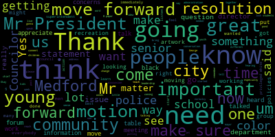
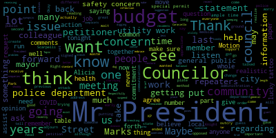

[Falco]: The regular meeting of June 9th. This is the 20th regular meeting of the Bedford City Council. Clerk Hurtubise, please call the roll.
[Hurtubise]: Councilor Bears. Present. Vice President Caraviello. Yes. Councilor Knight. Present. Councilor Marks. Present. Councilor Morell. Present. Councilor Scarpelli. Present. President Falco.
[Falco]: President, all seven members are present. At this point in time, I'd ask everyone to please rise and salute the flag. I pledge allegiance to the flag of the United States of America, and to the Republic for which it stands, one nation, under God, indivisible, with liberty and justice for all. Thank you. Pursuant to Governor Baker's March 12, 2020 order suspending certain provisions of the Open Meeting Law, General Law, Chapter 38, Section 18, and the Governor's March 15, 2020 order imposing strict limitation on the number of people that may gather in one place, this meeting of the Medford City Council will be conducted via remote participation to the greatest extent possible. specific information and the general guidelines for remote participation by members of the public and or parties with the right and or requirement to attend this meeting can be found on the City of Medford website at www.medfordma.org. For this meeting members of the public who wish to listen or watch the meeting may do so by accessing the meeting link contained herein. No in-person attendance or members of the public will be permitted, but every effort will be made to ensure that the public can adequately access the proceedings in real time via technological means. In the event that we are unable to do so despite best efforts, we will post on the City of Medford or Medford Community Media website an audio or video recording transcript or other comprehensive record of proceedings as soon as possible after the meeting. At this point, I want to recognize Vice President Caraviello, who would like to make a statement.
[Caraviello]: Thank you, Mr. President. I have a statement, a partial statement for myself and some of my other Councilors. And if you indulge me, I'd like to read it to you. Please. Good evening. We are angry and we should be. It is the natural response to a senseless and tragic and preventable act. This time, that senseless, tragic act tragic and preventable act was the death of George Floyd this time.
[Scarpelli]: In times of tragedy, it's so common there is offer of thoughts and prayers, and when the dust settles, the perpetual systematic failures continue without address. The conversation about race can no longer be a side issue.
[Knight]: We need to face the uncomfortable fact that Medford is not perfect. For those of you who feel you have no voice, we hear you. We are listening. We want you to feel and to be free, to express your opinion and to do so without fear of punishment or reprisal. We recognize the need to be better and we will work with you.
[Marks]: Topic is not something we cannot run from. It's something we need to address and embrace. And you have our commitment to do so. Respectfully signed by Councilors, Caraviello, Councilor Knight, Councilor Scarpelli, and Councilor Marks. Thank you. Thank you Councilor for your comments.
[SPEAKER_08]: Thank you very much.
[Unidentified]: I apologize Councilor Knight.
[Knight]: Motion to revert back to regular order of business. Thank you very much Mr. President.
[Falco]: Thank you very much for your comments. On the motion of Councilor Knight to revert to the regular order of business. Please call the roll. Seconded by Councilor Scarpelli.
[Hurtubise]: That's a bears. Yes. Vice President care of yellow. Yes. Council night. Yes. Council marks. Yes. That's a morale. Yes. That's a scrub Kelly. Yes. President Falco.
[Falco]: Yes. The motion passes hearings. This is a notice of a public hearing. Legal Notice 20-389, petition for grant of location, National Grid, North Andover, Massachusetts, joint or identical poll locations, Medford, Massachusetts, City Clerk's Office. You are hereby notified that by order of the Medford City Council, public hearing will be given via Zoom at 7 p.m. on Tuesday, June 9th, 2020, on a petition of National Grid for permission to locate polls, wires, and fixtures, including the necessary sustaining in protecting fixtures along and across the public way herein named said poll locations to be located substantially in accordance with the plan marked Woodruff Ave, Medford, Massachusetts and filed in the office of the city clerk. Whoever prays that after due notice in hearing, as provided by law, it be granted a location for and permission to erect and maintain poles and wires together with such sustaining and protecting fixtures as it may be necessary said, poles be erected substantially in accordance with the plan marked Woodruff Ave. Medford, Massachusetts and available for inspection in the office of the city clerk, Medford City Hall, room 10385, George P. Hassett Drive, Medford, Massachusetts, 02155. also for permission to lay and maintain underground laterals, cables, and wires in the above or intersecting public ways for the purpose of making connections with such poles in buildings as each of said petitioners may desire.
[Marks]: I'm also going to suspend the remainder of the reading and have the petitioner give a brief synopsis, Mr. President.
[Falco]: Yes, on the motion of Councilor Marks to get approved, seconded by Councilor Bears. Do we have a representative on the line?
[Hurtubise]: Mr. President, I still need to take a roll call on this, I'm sorry. Mr. President, I still need to take a roll call on this, on the motion to waive the reading.
[Falco]: On the motion of Councilor Marks, seconded by Councilor Bears, please call the roll.
[Hurtubise]: Councilor Bears. Yes. Vice President Caraviello? Yes. Councilor Knight? Yes. Councilor Marks? Yes. Councilor Morell? Yes. Councilor Scarpelli? Yes. President Falco?
[Falco]: Yes, 70 affirmative, zero in the negative. Do we have a representative from National Grid?
[Hurtubise]: I believe I saw Socrates here earlier.
[Falco]: Oh, he is, I see him right here, okay.
[SPEAKER_06]: I'm sorry. I was trying to unmute myself. I was trying to unmute myself. I'm sorry. So yes, for this one is basically a simple pole that we need to install near Woodrow Ave in Medford. It's just for feeder monitor. It's just for our circuit to be more reliable. That's what we need it for.
[Falco]: So If I may go on further, this has been approved by the chief engineer with the following conditions. The engineering division recommends that this grant of location be approved with the following conditions. Number one, the grant of location is limited to this one JO poll described in the GOL document as follows. National Grid will install one JO poll on Woodruff Ave beginning at a point approximately 200 feet east of the center line of the intersection of Bradbury Avenue and Woodruff Avenue. Two, before starting work, the contractor shall notify DIGSAFE and shall obtain all applicable permits from the engineering division. The project must obtain a street opening permit pursuant to section 74-141A. of the city ordinances prior to commencing work. Number three, no other utility structures, conduits, duct banks, pipes, or any other appearances are adversely impacted. National Grid shall ensure that all sewer, water, and drain lines are marked prior to any excavation. Any disturbed concrete sidewalk panels shall be replaced in kind. Asphalt must be replaced with asphalt. Number four, the new pole location is located adjacent to granite curbing. Any disturbance of the curb or curb concrete backing must be repaired to the satisfaction of the city engineer. Number five, the new pole location is in a landscaped area with trees. The city of Medford tree warden should inspect the trees before and after construction. Tree protection should be required and coordinated with the Medford tree warden. That's approved by the superintendent of wire. So at this point, I'll declare the public hearing open, open to those in favor of the petition. Socrates, you're in favor, I assume?
[SPEAKER_06]: Yes, I am. Yes, I am.
[Falco]: Okay. Is there anyone else here in favor of the petition that would like to speak in favor of this petition?
[Unidentified]: Okay.
[Falco]: Seeing and hearing none, I declare this portion of the hearing closed. Anyone here in opposition of the petition? Anyone in opposition? Anyone in opposition? Clerk Cardavis, you see anybody in opposition?
[Hurtubise]: I don't see any. Okay.
[Falco]: Hearing and seeing none, I declare this portion of the hearing closed.
[Unidentified]: Thank you.
[Falco]: Thank you. Is there any questions for Socrates on this matter?
[Knight]: Consul and I. Mr. President, thank you very much. Socrates, good to see you again this evening, Phil. Good to see you too. A couple questions for you. Now this looks like it's a 200 foot trench. What's it going to be the typical trench that we used to see in a grounded in grounded inlay trench 18 inches right around the gutter the curb right along the curb? Yep. Okay, and is this you said it was for system upgrades for reliability circuit circuit or something?
[SPEAKER_06]: It's just to monitor the feeders that we have, existing feeders. It's just for a way for us to make it more reliable.
[Knight]: Okay. And 200 feet grounded inlay, 18 inches from the curb. And then it says also that some of this work is going to be done in a wooded or treed area. Is that on city property?
[SPEAKER_06]: I'm not too familiar with the area at the moment. I don't believe it's going to be any near that place, but I can double check.
[Knight]: I can double check. No, it looks like the tree warden's involved, so it looks like it is. Okay, I appreciate you clarifying some of those questions that I have for you. Thank you very much.
[SPEAKER_06]: No problem.
[Marks]: Any other questions from the council? Thank you, Mr. President. This is more of a general statement and no reflection on National Grid, although they sometimes are part of the problem in the community, Mr. President. But of recent, I've been receiving a number of complaints regarding utility work on our streets. Just recently, Park Street had some utility work and a giant trench was dug the length of Park Street, and the work to put back the tar was less than shoddy, Mr. President. and poses a safety concern for area residents. I would ask, Mr. President, at some point, I know we have a lot on our plate, but at some point that we set up a Committee of the Whole meeting to discuss utility work in the community so we can address and make sure that when utility companies come in, that they restore our streets better than they were, Mr. President, and that no safety concerns exist while work takes place.
[Falco]: Thank you, Councilor Marks. We can organize that at some point in time. I think that actually would be a good meeting to make sure that we resolve any issues and make sure that any utility companies that are coming in are basically repairing our roads to the original condition. So I thank you for bringing that forward. Any other questions from the council? Clerk Hurtubise.
[Hurtubise]: Is Councilor Marks' request an amendment, or is it just a request for the Council to take up?
[Marks]: I don't want to do it on their petition, so I would just put in a request to the Council President to kindly set up a meeting regarding utility work in this community. Thank you for clarifying, Councilor. I appreciate it.
[Falco]: Thank you. Thank you, Councilor Marks. Any other questions from the Council? Any other questions from the public?
[Hurtubise]: No emails on this topic.
[Knight]: Mr. President, I am hoping we can add a condition onto the granting of this location that when the work is complete, the street will be swept. We've seen Park Street, as Councilor Mark mentioned, Stearns Avenue, Golden Avenue, where a lot of public utility work has been performed, trenching the length of the street to replace pipes and the like. And what happens is, You know, they dig a 200-foot-long trench, and they have a great system of doing it. I mean, they're very efficient. They take all the stone out of the ground, all the dirt out of the ground. They put it on the street. They do the work that they have to get done while the street's closed. They put all the sand and dirt back in the hole. They seal it up. But there is debris left over, Mr. President. There are rocks and stuff like that that kick up. especially on streets that are highly frequented. You know, if you think about Golden Avenue, you think about Park Street, the amount of cars that drive down the street, kicking up those little rocks do tend to damage vehicles. So that's something that I'd like to ask to be placed on it as a condition that the street be swept the length of the 200 feet for which the trench is being dug.
[Falco]: Okay. Clerk Bernanke, do you have that word? I've got it, yep. Okay. So, Shaka Teasy, is that something we can do?
[SPEAKER_06]: Yeah, I can send that information over. But I believe this one is an overhead service. I mean, it's an overhead run. It's not going to be on the ground, if I'm not mistaken. Because I was just looking at the sketch right now, and it seems like it's an overhead portion. It's not going to be on the ground.
[Falco]: So it's wires, it's not digging into the concrete or the asphalt?
[SPEAKER_06]: Yeah, no. I'm just looking at it real quick.
[Marks]: Okay. So, Mr. President. Councilor. I just want to concur with my colleague, Councilor Knight, that that is a great suggestion and much of the work involves trenching and digging in our community and sweeping up after, I think should be a standard part of the job. So I support that in future requests, Mr. President, as well.
[Falco]: Yeah, thank you console box I would agree as well. That is actually nice to add that in console and I for the purposes of.
[Knight]: This petition, Mr. President, I have reviewed it. It does look like it is a J-pole only. And the 200 feet is east of the center line as to where it's located. It's gonna be a 200 foot run overhead from what Socrates said. What I have in front of me looks like it's in line. So in terms of making that a condition on this petition, I'm not so crazy about it, but in the future, I think that that's something that we need to talk about. So I would ask that it be added to the agenda of items that we've discussed in the past relative to French work when we conduct this meeting with the engineer. but at this point I would withdraw the I would withdraw the restriction.
[Falco]: Thank you. Is there a motion on the floor? Motion for approval. Mr. President. I'm emotional to approve seconded by console and I caught her to be please call the roll bears.
[Hurtubise]: Yes. Vice President Caraviello. Yes. Councilor Knight. Yes. Councilor Marks. Yes. Councilor Morell. Yes. Councilor Scarpelli.
[Falco]: Yes.
[Hurtubise]: President Falco.
[Falco]: Yes, 70 affirmative, zero in the negative, the motion passes. Socrates, thank you.
[Hurtubise]: Thank you, good night.
[Falco]: Notice of a public hearing. 20-075 City of Medford notice of a public hearing. A public hearing will be held by the Medford City Council via Zoom on Tuesday evening, June 9th, 2020 at 7 p.m. on a petition from Michael James Coleman of Sacramento Tattoo 475 High Street, Medford, Massachusetts 0215 for a special permit to conduct a body art establishment In accordance with the City of Medford zoning ordinances, chapter 94 of section 94-2 and section 94-148, use 14A to operate its business at 475 High Street, Medford, Massachusetts. The C1 commercial one zoning district petition plan may be seen in the office of the city clerk, Medford City Hall, Medford, Massachusetts, 7813932425. Zoom link will be posted on the Council agenda on May 29, 2020 on the City of Medford website. Call 781-393-2501 for any accommodations, AIDS, TDD, 781-393-2516. The City of Medford is an EEO-AA-504 employer. By order of the City Council, Adam L. Herneby, City Clerk, advertise a Medford transcript May 21st and May 28th, 2020. I declare this public hearing open, open to those in favor of the petition. Do we have Michael James Coleman with us tonight? We do. Okay. Mr. Coleman, welcome. If you could please tell us a little bit about your business and if you just, and then questions, I'm sure the councilors will have questions, but if you could just give us a brief overview of why you were in favor of the petition.
[SPEAKER_25]: Sure. So, I've been a professional tattoo artist for six plus years. I have family in Medford. This has been my business for, you know, doing it professionally, and I'm in favor of just opening up my own studio. won't be like a huge place, it'll be more of like a private studio, couple rooms in there. And I can answer any questions that you might have about it.
[Falco]: So you are in favor of the petition?
[SPEAKER_25]: Yes.
[Falco]: Okay, perfect. So at this point in time, is there anyone else that would like to speak in favor of the petition? Anyone else? Anyone else? Hearing and seeing none, I declare this portion of the hearing closed. Anyone in opposition of the petition? Is there anyone in opposition of the petition that would like to speak? It should make sure I'm not missing anyone.
[Hurtubise]: I don't see anybody, Mr. President.
[Falco]: Okay. Hearing and seeing none, I declare this portion of the hearing closed. And I'll call upon the Chairperson of Zoning, Vice President Caraviello. Councilor Caraviello, I have to unmute you, one minute. All right, I got it.
[Caraviello]: Thank you, Mr. President. Thank you. Thank you. I see your paper here that says everything seems to be in order for this. As you know, we've received many calls from residents in the neighborhood in regards to your tattoo file. Again, you're a legal business. You're entitled to open. I see no problem here. My only question is, and maybe this might make it a little more amiable to some of the people in the neighborhood, is the name. You're a stone's throw from our three churches, and maybe if you could soften the name up a little bit, might make it a little more... amiable to the people in the West River Square and the three churches that are really right within, let's say, they're within a stone's throw of it. So that's my opinion. So I don't know what you feel about that.
[SPEAKER_25]: No, I understand. I'm brought up in an Irish Italian family, you know, religious, went to Malden Catholic, in no disrespect to, you know, the name being it somewhat of like a religious name. You know, the reason that I really chose the name for it was Sacrament and the sacraments that you receive is kind of like a ritual ceremony. So I kind of link that to like a tattoo between like an artist and a person and sharing a bond. Like I said, I don't mean any disrespect. I can talk to anyone that, you know, kind of isn't really feeling the name so much. But like I said, I can, I'm a person that can, you know, can be reached easily and very personable person I can.
[Caraviello]: I'm sure you are.
[SPEAKER_25]: Yeah.
[Caraviello]: Is it just a suggestion, you know, we have two other, we have two other similar type businesses. We have one in the residential neighborhood in South Bend that's similar to yours and they've been a good neighbor too. The people, I don't think there's been any complaints that I know of. And we also have another one on the Fells Way, which, you know, I don't think there's been any problems there either. But again, that was just my two cents into that. But other than that, you know, your license seems to be in order here.
[SPEAKER_25]: Thanks so much. Thank you.
[Caraviello]: Thank you, Vice President Caraviello.
[Falco]: Godfless Scarpelli.
[Scarpelli]: Thank you. And thank you, James, for applying. And hopefully this works. Some, some of the comments I received is some of the, the artwork that could be posted on the windows and some might tasteful some might be a little questionable and being in that area. That was some of the questions I got from some residents. Do you plan on putting, you know, some, I know artwork is important and people can see your artwork. I think that's important. I think you should be able to do that in a sense. But I think what the fear of some of those neighbors are that some of that artwork might be a little too provocative or risque to put in an area where kids are walking by to go to CB Scoops or to a sub shop. So can you speak to that a bit?
[SPEAKER_25]: Absolutely. Um, I wouldn't, I wouldn't put anything disrespectful or risque like in, in the windows or even from like street view. Um, I understand that tattoo work and religious art work and can get, you know, a little questionable sometimes, but, um, I'm a father of an eight year old myself. So, you know, nothing that I would do would. jeopardize my business. And I want everyone in that community, I know it's very tight knit in that in that row of, of businesses and whatnot, that I want to be able to be a good role model for for kids, you know, that are interested in artwork or interested in tattooing or, you know, anything else, you know. Right. Great. Thank you. Yeah, no problem.
[Falco]: Thank you, Councilor Scarpelli. Councilor Marks.
[Marks]: Thank you, Mr. President. The question I had was regarding how would you treat medical waste?
[SPEAKER_25]: So I know that's definitely something that is covered early on in like learning the tattoo process. Everything in the studio will be fully disposable. you know, we would be abiding by the big, you know, the COVID-19 pandemic that we're in right now with face shields, masks, you know, allowing certain amount of people in the studio when we open. But as far as like needles, cartridges, we have a service that's done weekly and monthly, and they come pick up everything there in sharp containers and everything is handled on hospital clean levels.
[Marks]: So at no time would you be using the local trash for needles or blood or any other type of medical waste?
[SPEAKER_25]: No, absolutely not.
[Marks]: Thank you. Mr. President, my good luck of being on the council for a number of years gives me some wisdom. And back so many years ago, we had a tattoo pile that tried to come onto Forest Street across from the Boys and Girls Club. It was called Lucky Tattoos. And at the time, Mr. President, the petitioners had, in my opinion, a lengthy record about border health issues and so forth and raised some concern. And I Voted against the petition based on concerns. I had with lucky tattoo. This has nothing to do with this petitioner and We mr. President ended up getting sued by lucky tattoo and they ended up winning a suit of I believe it was 25 to $30,000 against the city of method because we denied their special permit and and apparently we were being arbitrary and capricious, even though I felt we had valid concerns of this opening. On this particular petitioner, Mr. President, I don't have those concerns. It is signed off by the Board of Health. The Method Police has issued a statement saying that they have no public safety concerns. The petitioner seems to be a good business person, and I wish him well, Mr. President.
[SPEAKER_25]: Thanks so much for the kind words.
[Marks]: Thank you, Councilor Marks.
[Unidentified]: Any other comments from the council?
[SPEAKER_08]: Second. Motion to approve.
[Unidentified]: Second.
[Falco]: On the motion to approve by Councilor Knight, seconded by Councilor Bears. Does anyone want to speak on this in the public? Anyone in the public want to speak?
[Unidentified]: Okay.
[Marks]: Mr. President. Council Marks. I would also ask similar to many other special permit requests that we put a six month review on this special permit, Mr. President. Okay.
[Knight]: Also, Mr. President, that the special permit goes with the business and not with the address.
[Falco]: Do you have those amendments, Corker?
[Morell]: Hang on a second. I do see a raised hand, Mr. President.
[Hurtubise]: I've got the two amendments. I've got the two conditions. Councilor Marks has requested a six month review and Councilor Knight has requested that the permit goes with the business and not with the address.
[Falco]: Okay, we have, let's see. John Nicholas First, if you could please give us your name and address for the record.
[SPEAKER_27]: Sure. I'm John Nicholas First. I live at 32 Warren Street in Medford. So that's just a block or two away from where this is on High Street. I just wanted to voice my public positive support for this prospective institution. I think that they are doing a good thing for the community, and I look forward to them being approved by this council.
[SPEAKER_25]: Thank you so much, John.
[Falco]: Thank you very much for your comment. Would anybody else like to speak on this issue? Clerk Kurtabese, have you received any emails on this?
[Hurtubise]: I have not, Mr. President.
[Falco]: So on the motion of Councilor Knight, seconded by Councilor Bears, as amended by Councilor Marks and Councilor Knight. Clerk Kurtabese, would you please call the roll?
[Hurtubise]: Councilor Bears?
[Caraviello]: Yes.
[Hurtubise]: Vice President Caraviello?
[Caraviello]: Yes.
[Hurtubise]: Councilor Knight. Yes. Councilor Marks.
[Caraviello]: Yes.
[Hurtubise]: Councilor Morell. Yes. Councilor Scarpelli. Yes. President Falco.
[Falco]: Yes, 70 affirmative, zero on the negative. The motion passes. Thank you and good luck.
[SPEAKER_25]: Thank you so much, everybody. Thank you.
[Caraviello]: Have a good night. Mr. President, motion for suspension of the rules to take paper 2040. 2-0-0-4-0? 2-0-4-2-0. Mr. President, it's 2-0-4-2-0.
[Hurtubise]: It came in under suspension. I did not assign it a number until this afternoon.
[Falco]: I don't think I have the paper in front of me.
[Hurtubise]: OK, so on the- I can read my email and read it back if you need me to.
[Caraviello]: Mr. President, we can do this next one and you can come back to it when the clerk sends you uh, the paper. Okay. So we can move on. We'll do that next. So are we sitting by motion?
[Falco]: Okay. So we're going to continue on with the regular order of business.
[SPEAKER_25]: Thank you so much.
[Falco]: Thank you. Have a good night.
[SPEAKER_25]: You too. Congratulations. Best of luck. Thank you so much, everyone. Thank you.
[Falco]: Thank you. Notice of a public hearing 20-042, an ordinance amending the revised ordinances of the city of Medford zoning relative to adult use marijuana. Be it ordained by the city council of the city of Medford.
[Bears]: Motion to suspend the reading in favor of a synopsis.
[Falco]: Would you like to give that a synopsis, Councilor Bears?
[Bears]: I can try. I think it's easier than reading this whole thing.
[Falco]: I understand it's a 17-page document. It is the first time it's being read, so that's why I was probably going to read it in its full context, because it's the first time I think it's been out. So I think the public should actually be able to listen to this. I know it's long, but if the council sees that we should move forward with a brief synopsis, if someone wants to give it, that's fine. But I think there's a lot of detail in here that probably should, that should be read through.
[Marks]: Mr. President, just a point of information. Is it possible to table this till the end of the meeting?
[Falco]: We can do that. The meeting will never end if we table. Is there a motion to table?
[Bears]: Motion to table to the end of the meeting.
[Falco]: Okay, motion by Councilor Bears to table this, seconded by? Second. Seconded by Councilor Marks. Clerk Urbis, please call the roll.
[Hurtubise]: Is this to be tabled until the end of the meeting tonight?
[Falco]: You are correct.
[Hurtubise]: Okay, Councilor Bears. Yes. Vice President Caraviello. Yes. Councilor Knight. No. Councilor Marks. Yes. Councilor Morell. Yes. Councilor Scarpelli. No. President Falco. No.
[Falco]: Is that a four, three in favor?
[Hurtubise]: I have four, three.
[Falco]: Okay, four in favor, three against. This will be tabled to the end of the meeting.
[Caraviello]: Mr. President, do you have the paper now?
[Hurtubise]: I'm doing it right now. I'm setting it right now.
[Caraviello]: Mr. President, motion for suspension of the rules to take paper 20420.
[Falco]: Vice President Caraviello, does he suspend the rule, seconded by? Second. Councilor Marks, please call the roll.
[Hurtubise]: Councilor Peters? Yes. Vice President Caraviello? Yes. Councilor Knight?
[Unidentified]: No.
[Hurtubise]: Councilor Marks? Yes. Councilor Morell? No. Councilor Scarpelli? Yes. President Falco?
[Falco]: No. Four in favor, three against, motion passes. The rules are suspended. Clerk Hurtubise, can you read the motion please?
[Hurtubise]: Yes, this is offered under suspension by Vice President Caraviello. Whereas the city of Medford is in a fiscal budget emergency, be it resolved that the mayor be requested to appropriate, with the city council approval, the necessary amount out of free cash to address the municipal and school budget deficits, and further, that the mayor be requested to replenish this account with any budget aid Medford receives from the federal government or the Commonwealth of Massachusetts. Be it further resolved that the mayor respond to this request by next Tuesday's city council meeting.
[Caraviello]: Thank you, Mr. President. Mr. President.
[Falco]: If I may, Vice President Caraviello, this has been on under suspension and this year I don't think falls under the. the guidance that we've been given by the city solicitor. I mean, I tend to think of- Mr. President, Mr. President, where this is a number- Vice President Caraviello, and if I may, I believe that a paper that is requesting free cash should be coming from the mayor's office. It shouldn't be derived from the city council.
[Caraviello]: So that's- It's only a suggestion to the mayor, Mr. President, and this is an emergency situation.
[Falco]: And so what I would do is... I think that this is something that we should put on the agenda for next week, because I'm sure there's probably plenty of people that would like to chime in on this, and they're probably not on the call tonight, because they probably didn't know it was gonna come up. So as far as, we have some other, I think, budget-related motions afterwards, but I think as far as bringing this up under suspension, I don't think it's proper to bring this up tonight.
[Caraviello]: Whatever you think.
[Falco]: I want to make sure we're complying with the open meeting law, that's why.
[Caraviello]: Again, I felt this was an emergency situation. Notices of teacher layoffs have to go out by Monday.
[Falco]: And I know the administration is aware of that as well, as well as the school department. If you feel that it should be tabled to next week, then... I would ask you respectfully if you could please reintroduce it next week.
[Caraviello]: Whatever you say, Mr. President.
[Falco]: Thank you, Vice President Caraviello. Is there anything on the suspension that- Motion to revert back to the regular order of business. On the motion of Councilor Knight to revert back to the regular order of business, seconded by- Mr. President.
[Marks]: Councilor Marks. Just a point of information. I think the paper was offered under suspension. I still think we have to do something with it. Right, whether we receive it on file or do something. Motion to table. Motion to table. Rule the paper out of order.
[Falco]: I'm basically ruling the paper out of order. That's what I'm doing. So I'm asking, I respectfully ask Vice President Caraviello to reintroduce it next week.
[Caraviello]: I will reintroduce it next week, Mr. President.
[Falco]: Thank you, I appreciate it. Thank you, Councilor, Vice President Caraviello. So I have a motion to revert back to regular order businesses by Councilor Knight, seconded by?
[Scarpelli]: Second.
[Falco]: Yes. Yes. Yes. Yes. Yes. Yes. Yes. Yes. Yes. Motions, orders, and resolutions. 20-394 offered by Councilor Knight. Be it resolved that the Manhattan City Council publish the scheduled pre-budget and regular budget meetings for the purpose of establishing a fiscal year 2021 city budget. Councilor Knight?
[Knight]: Yes, Mr. President. Mr. President, yes. Um, as I've stated in the past, I have a, uh, hostile desire that we get a fiscal year budget completed before the close of the fiscal year. Um, just last week, I believe we met with our paid outside consultant that said that we're, uh, in a difficult financial situation. We have about a $10 million deficit. Um, we have $183 million budget. Um, the consultant says that he feels as though we do have the ability to put out a fiscal year budget. The consultant says that there's no way that we want to get involved in a 1-12 budget. So I'm going to do my best Jerry Maguire here, Mr. President, and ask, where's the budget? Show me the money. Show me the money, Mr. President. Time that we get to the table and start negotiating this budget, debating this budget. It's what, June 9th? The fiscal year closes in 21 days, Mr. President. We've seen nothing, not one financial paper yet. Transparency, where is it? Where is it? Again, come on, Jerry, say it. Show me the money. Show me the money, Jerry. Where is the budget, Mr. President? Where is it? You know, we need to take the bull by the horns, schedule budget debates, invite the administration to come down and participate. And if they don't want to, they don't have to. But we got to do something here. We got to show some leadership that at the end of the day, the residents and the taxpayers in this community know that we're pushing hard to be sure that city services aren't interrupted during these difficult fiscal times. So with that being said, Mr. President, I ask that you work with the administration to publish a schedule as to when we're going to be able to meet in person to conduct budget debates. I think, you know, as we're seeing the phases of government and coronavirus to be allowed to start working again, I'm pretty sure that the seven of us plus the department head and the budget director can sit down in a room, be safe, and work out these very significant, serious issues in this community. So I'll say it again. Show me the money. It's time, Mr. President. That's time, June 9th, June 9th. I've never, ever, ever in my time working in government and working in this community ever seen a goal this long where we haven't had some sort of budget. We have a consultant. The consultant has given us our figures. The consultant has told us they're worth $10 million in the hole. Last time we talked, the plan was to level fund, to borrow money out of our free cash, to take money out of our free cash. But we're still going to have a structural deficit if we do that, Mr. President. So I know there are difficult decisions that need to be made, but that's what we get paid the big bucks to do. So quite frankly, we can't sit down at the table and start talking about issues of concern if we don't have a document in front of us to work off of. So it's very important that we get this budget book and we get it immediately. My frustration level at this point, Mr. President, is over the edge. I feel like I've been talking about this now for six, seven, eight weeks. Um, and we're still no closer to having any understanding as to what the administration's financial plan is to move this community forward. Um, so with that being said, I asked my council colleagues to support the resolution. I asked the council president to publish a series of meetings as to when we're going to be able to sit down and negotiate this budget. I'd ask that it be done in line with the recommendations that our paid outside consultant gave us, which says that we can complete the budget before the close of the fiscal year. So that's what I asked for, Mr. President. And I hope that the administration is willing to work with us and has been doing what they're supposed to be doing and preparing a budget for us based upon the forecast that our private paid consultants have given us. There's no point in having outside consultants if we're not going to listen to the information they've given us and use it to make informed data-driven decisions. So with that being said, I rest my case. I don't know any more lines from the movie Jerry Maguire. So with that being said, Mr. President, I ask my council colleagues to support this paper and I have all the confidence in the world that you'll be able to make this happen, Mr. President.
[Falco]: Thank you. Thank you, Councilor Knight. If I may, briefly, I did speak to the mayor earlier today and she did inform me that I guess the state has allowed is allowed the budget deadline to move from June 30th to July 31st. But she knows that we're looking for something sooner than later. I did tell her that I wanna make sure that we have, as last week I stated repeatedly to the chief of staff that we need to have a budget book ASAP. I agree with you a thousand percent. We need to have a budget book in front of us that we have a few days so we can actually go through the data, take a look and formulate, Good question. So when we meet with the mayor, we can have a very constructive conversation. This is a very important budget. I know that they're still working. From what I've been told, they're still working on the numbers. From what I have also been told is we won't get state aid until July. But I am working, or actually I did talk to the mayor. I think she's going to have something for us hopefully next week, but don't know for sure yet. So that's the update that I have from the administration. I know Aleesha Nunley, I think is on the line. She may want to talk to this a little bit more. I'm not sure if Jackie Peeks or Dave Rodriguez is on the line as well, but they may want to comment as well. We have a number of councils that want to talk too. So why don't I, let's see, Aleesha Nunley, would you like to speak on the matter? Sure.
[Nunley-Benjamin]: Thank you, Honorable City Councilors. Yes, we are still making cuts. I'm going to be completely transparent. This has been an extremely difficult budget. And like the councilor said, this has never happened before. We've never had COVID before. We've never had a shutdown. This has just really, really been difficult. So we've been trying to figure out the best way to do the cuts with each department head, trying to figure out everything that we can do. It is still a work in process, unfortunately. We have not finalized numbers, but we are really working towards getting there right now. We've had meetings, so we do want to get you a budget.
[Falco]: Thank you. We have a number of questions. Let's see, Vice President Caraviello, Councilor Villes, and Councilor Marks. Vice President Caraviello.
[Caraviello]: Thank you, Mr. President. Mr. President, if I could amend Councilor Nice's paper to put down that we do meet in person. We had 1,000 people at Hall Mill Stadium last week. It was attended by many councillors. So again, I don't see why seven or eight or 10 of us can't be in a room if we could have 1,000 people in one spot and say there were councillors that were in attendance. So if I could amend that Councilor Knight's motion to make sure that we have a plan to meet in person.
[Falco]: Thank you, Councilor Caraviello. So, Clerk Hurtubise, do you have the amendment?
[Hurtubise]: I do, Mr. President. The amendment is that the council meet in person to discuss the budget once everything is scheduled.
[Falco]: Okay, thank you. Councilor Bears.
[Bears]: I'd be happy to meet outside on a sunny day, six feet away with a mask on, but just my actual point is, that it's incredibly frustrating that we're at this point. I understand the difficulty, I understand this is unprecedented, but people are really concerned about this budget and they have a right to be. And the fact that a lot of us, basically everyone feels in the dark is just gonna, the longer that we go, the bigger a problem this is gonna be with residents feeling in the dark. So I, next week is, it's late. I think we need something by Friday if we're gonna be able to do this right.
[Marks]: Thank you, Council of Affairs. Councilor Marks. Thank you, Mr. President. I think if we all recall, this may have gave us a commitment that we were going to get the budget in April. That would have been the earliest budget, Mr. President, I've been on 20 years on the council, that this council has ever received a budget. And then we had what we all know COVID-19 came into effect, Mr. President, and threw a monkey wrench into that. So the commitment was out there, Mr. President, to get us an early budget. And we're faced now with a $10 million deficit. And although some would like to see a budget immediately, I think it's only prudent that the mayor take the time, Mr. President, to wait to see the local aid, what we're going to receive, to see what local receipts may be coming in. We also waited, Mr. President, which we all know, because they extended the period to pay your taxes. So we wanted to see what revenue we had in order to put together a budget. So I appreciate the fact that my colleagues have concern, but I can tell you from experience, Mr. President, I remember getting the budget with one night to work on it. And I remember, Mr. President, in the past, there wasn't much outcry for many years, Mr. President. And now all of a sudden, in the middle of COVID-19, there's an outcry to get the budget, which we never got this early, Mr. President. So it's great people want to see the budget. I'm eager to see the budget. We need to move forward, Mr. President. But by no stretch of the imagination is this city administration holding anything back. They're trying to put together a budget that will provide city services, that will keep people employed, Mr. President. The last thing we want to do is send out a budget to alarm people that they may be losing their job, and then we get a federal stimulus. or we get a bailout. And guess what? When you were worried about your job for the last three weeks, you don't have to worry. The last thing we do is want to worry people, Mr. President. We're all going to have ample time to meet with the department heads. We're going to have ample time to go over the budget, Mr. President. And we're going to have ample time to make sure we have input. So don't let anyone tell you otherwise. The process has worked this way, Mr. President. And I feel comfortable that we're moving forward with a realistic budget. I don't want to see a budget that's not realistic, because I've dealt with one for the last 20 years. I want to see a realistic budget. And I think that's what this current administration is working on, Mr. President, in a time of emergency, in a time of a pandemic, and a lot more happening, Mr. President. Thank you.
[Unidentified]: Thank you, Councilor Marks. Councilor Layton.
[Knight]: I do think it's important to point out, Mr. President, that if we were supposed to meet April 1st, that would have been great. And government shutdown happened March 13th. And I do believe the administration had indicated that they had a working budget based upon the forecast at the time for fiscal year 21. And I do believe that we requested that that information be shared with us. And I do believe that the administration has refused to do so. I still haven't received that document that we requested, Mr. President, asking for a copy of the working budget that they had.
[Marks]: Mr. President, that was a preliminary budget that every mayor for the last 30 years works on, Mr. President. And if someone wants to create the budget, maybe they should run for mayor. Because it's the mayor's responsibility to create the budget and then pass it on to the council, Mr. President. So I don't know why we're putting the cop before the horse, Mr. President. It's never happened in previous years, and there was never anyone outspoken in previous years. But now, I guess in COVID-19, we have different expectations, Mr. President.
[Unidentified]: Thank you, Councilman. Councilman, I
[Knight]: I agree with the gentleman wholeheartedly. It's the mayor's responsibility to put a budget forward, and I certainly would love to see one, one that has, based on realistic expectations, like the ones that we paid for from our private consultant, the numbers that he gave us, that the private consultant provided us with, so that we were able to forecast accurately, so that we could put together a realistic budget. You know, Mr. President, I think that it's important for us to look at the circumstances that are before us. We're in a financial crisis. We've been in financial crises before, and we've been able to work our way out of them. But we've had to work to do it. So let's get to work on it. That's all I'm saying.
[Falco]: Thank you. Any other comments regarding the budget?
[Unidentified]: Does the public have any comments? Great.
[Falco]: Okay, hearing and seeing none on the motion.
[Hurtubise]: Mr. President, I see that Danielle has her hand raised, I believe.
[Falco]: I'm sorry. We're gonna let Councilor Scarpelli go first and then we'll go to Danielle. Councilor Scarpelli.
[Scarpelli]: Thank you, Councilor. I believe I was just letting you be aware that Aleesha Nunley had her hand up.
[Nunley-Benjamin]: Oh, I'm sorry. Alicia. Yeah, I just wanted to address that. Yes, it's true that we did start the budget process back in March. We had met with the school department gave them an estimate and then unfortunately, the COVID-19 hit and we were trying to kind of figure out how everything was going to work. I just want to be completely fully transparent. And as we were trying to get our numbers and I was trying to do casting like that I was affected personally by COVID-19. I'm a key contributor, to be honest, with your honorable body. I give the revenue figure to the mayor in order to budget, and I was not available, and they had to find a consultant to help them with that while I was away. I've been back, I've been working extremely hard on the front side, looking at each department's budget, looking at where we can cut, what we can do, analyzing the revenues with our consultant to make sure my numbers and his numbers are aligned So I just wanna let you know that we are working extremely hard to get you a budget.
[Falco]: Thank you, Alicia. Councilor Lange.
[Knight]: Alicia, was there a working budget for the city of Medford ever prepared?
[Nunley-Benjamin]: What we did was I came up with a projection based on the numbers that I saw. of what I thought we would have for revenues and where I thought the school could be. I gave that figure. I started looking at the numbers once the COVID hit, and we had to freeze everything. I started going back and did a 10 year analysis to look back to when we had other crashes in the economy and how we fared out and what to kind of expect. And then I got sick.
[Knight]: Okay, so when the chief of staff said three meetings ago that they had a working budget for fiscal year 21. That wasn't necessarily the case.
[Nunley-Benjamin]: I'm talking about back in March.
[Knight]: Sorry, me too. Yeah, I believe it was represented that the city had a working budget based upon the projections at the time prior to COVID-19. for fiscal year 21. And then Coronavirus hit. And then that's why they pulled on it didn't put it out.
[Nunley-Benjamin]: Numbers I had at that time were incorrect because we had to revise them down because of COVID-19. So that was that was no good.
[Knight]: So we do have a pre Coronavirus budget representing each department in this community.
[Nunley-Benjamin]: I mean, the ones that I worked on, I worked on some projections to come up with numbers for what to budget for the school and what to budget in general, but we didn't have every single budget set up, but yes, they would have had a preliminary of what the number would have been.
[Knight]: Okay. So there wasn't a working budget that was ready to be looked at and reviewed and debated in the two weeks coming up to April 1st. All right. Thank you very much for that. I appreciate it. You're doing an awful lot of work on the budget. And that's great, we appreciate it. I find it to be very, very intelligent and I've always enjoyed that conversation. But a silent voice in this has always been the budget director. And I don't know if the budget director is on the call. I'm not sure. But it's becoming increasingly frustrating. Do we have a budget director that doesn't come to budget meetings? We have people that, you know, the budget can't happen because certain people around certain people aren't, but we have a budget director that we're paying to coordinate this stuff. So with that being said, Mr. President, you know where I stand, I want a budget. And I want it as soon as we can get it, get as soon as possible so we can get down to work on it. I won't belabor the point. And again, I thank Ms. Nunley for all the work that she does here in the community. I rest my case.
[Falco]: Thank you, Ms. Nunley. Thank you, council. We have David Rodriguez, chief of staff and the mayor, David Rodriguez.
[Dave Rodrigues]: and just to be very, very clear, the mayor wants to give you a budget. This is not a question of will, this is a math problem we're trying to work through. Exactly right, based upon the revenue numbers that were given to us and that we've been working on, that we were very, and to speak to the point of transparency, we came to the council and to the school committee pretty early to say, this is the trouble that we think we're gonna be seeing in terms of the revenue side. And this is the number that we're working off of in order to craft and propose to provide a balanced budget. The mayor is required by law to provide a balanced budget to the council. Under statutory timelines, which thankfully have been extended, but we will be getting it to you as soon as we possibly can. This will be a responsible, balanced budget based upon these revenue numbers that Alicia and Tony Roselli have been putting together and working around the clock, trying to revise constantly. We had begun the work on the budget previously. Budget is a year-long process, and it needs to be recognized like that. Inside March and inside early April, we had begun work on the budget, and we effectively had to restart all that work based upon the current economic and budgetary crisis that we're facing. So it's been a challenging scenario from March 12th to now, but we're working through it. And thankfully we have a talented budget team that's working together as a team to pull this document together.
[Falco]: If I may Chief of Staff Rodriguez, thank you for dialing in. Do we know when we can expect the first budget meeting to be?
[Dave Rodrigues]: Basically, I was my understanding about a conversation with the mayor earlier today. And I think that that conversation was beginning the 20th. I believe that's the conversation that you and you and her had.
[Falco]: Okay, so if we have the 20th, so that would be a Saturday. What can we expect a budget book? The bigger question is the book. We really need the book.
[Dave Rodrigues]: Yep. And that's currently under development right now. We will give it to you as soon as possible ahead of time on the 19th or before. So at least that we'll be able to start chewing on it for 24, 48 hours ahead of time.
[Falco]: Thank you. Councilor Bears, you had a question.
[Bears]: Thanks. I don't want to belabor it, but you know, We didn't get much solid information early. I understand the circumstances are difficult, but, you know, I personally feel the communication hasn't been enough. And I understand that people can disagree about that, but I don't think we're going to get any further here. So I move the question.
[Falco]: Thank you. The motion of Councilor Peo, seconded by Councilor Knight, as amended by Vice President Caraviello, Clerk Carnaby, please call the roll. Actually, you know what, I apologize. Did you say there was one person that wanted to speak that I missed before?
[Hurtubise]: Yes, Mr. President.
[Unidentified]: Danielle has her hand up.
[SPEAKER_21]: Hi, I think I may be, you're seeing that I was clapping my hands for the opening statement about racism.
[Unidentified]: Okay.
[Falco]: Would you like to speak on the budget? No, thank you. Thank you. We just wanna make sure everybody gets their turn. Okay, on the motion of Councilor Bears, seconded by Councilor Knight, as amended by Vice President Caraviello, Clerk Herves, please call the roll. Councilor Bears?
[Hurtubise]: Yes. Vice President Caraviello?
[Unidentified]: Yes.
[Hurtubise]: Councilor Knight?
[Unidentified]: Yes. Councilor Marks? Councilor Marks?
[Hurtubise]: I'm gonna skip Councilor Marks and come back to him. Councilor Morell? Yes. Councilor Scarpelli? Yes. President Falco? Yes. And then Councilor Marks, we still don't have a vote. Yes. Thank you.
[Falco]: Seven affirmative, zero negative, the motion passes. 2-0-399 offered by Councilor Knight, whereas the Office of Diversity is established to provide oversight of laws and regulations relating to affirmative action, contract compliance, fair housing, disability, human rights, discrimination, hate-related incidents, and or crimes. We focus on outreach, inclusion, and education. We interact with other city departments as well as other cities in local, state, and federal organizations and agencies to ensure fair and equitable opportunity and access for all persons. And whereas the Office of Diversity is established to provide persons with disabilities equal opportunity to access to as well as participation in education, employment, the public and private services in the city of Medford through advocacy, awareness, and enforcement. And whereas the office of personnel is established to help city departments attract, motivate, retain, manage, and develop qualified and productive employees. And whereas the functions of the office of the disability and office of diversity have been consolidated under the director of personnel. And whereas the consolidation as a result in the elimination of the independent disinterested check and balance on personal matters once provided through the Office of Disability and Diversity. Be it resolved that the Medford City Council request City Solicitor Scanlon provide an opinion on the following question. Does the consolidation of the above departments create any conflict with the law or liability within the City of Medford? Councilor Layton.
[Knight]: Mr. President, thank you very much, and thank you for indulging me in that very long-winded resolution that I put together. Ultimately, I've been concerned about this for some time, and I scratch my head sometimes and wonder if it's appropriate that we have a personnel director serving as judge, jury, and executioner on all matters related to personnel, disability, and diversity in the community. And the reason I say that, Mr. President, is because when the person that's responsible for personnel in our community wears so many different hats, that becomes a question and a concern as to whether or not he's serving the appropriate master and is in an appropriate role. So with that being said, Mr. President, if in fact we have the director of personnel that's serving on, let's say a hiring panel, and there's an individual in our community that feels as though they've been aggrieved based upon a disability issue or a diversity issue, course of action would be to go and speak with the disability director or the diversity director. Well, that person would also be the personnel director who sat on the panel, which made a determination that may have made you feel uncomfortable and maybe felt as though your rights have been violated. So that's the independent check and balance you go to to determine whether or not your rights are being violated and whether or not you're going to be advocated for. And it puts the personnel director in the precarious position of determining whether or not he's going to be defending the actions of the board he sits on. or advocating for the personnel that have come before him and asked for the assistance and the help. So, you know, it's really a structure of government, the consolidation, the government issue, Mr. President, but with a director of personnel has to wear so many hats and we already have made, you know, the recognition, the realization that there is a marginalized and underrepresented population in this community. The question is whether or not it's a best practice to merge these functions in underneath one umbrella in one person, number one, and number two, if by doing that, it creates a situation where individuals are being denied access to a resource and an independent check and balance that they had previously had that they no longer do. So with that being said, I'd ask my council colleagues to support the measure, to send the question to the city solicitor to see if it poses any conflict. Again, Mr. President, you know, it could be something as simple as an existing employee asking for a reasonable accommodation and the reasonable accommodation not being made. So you go to the personnel director, you ask for a reasonable accommodation, it's not being made. You go to the director of disability and you say, you know, this is my situation, I need someone to advocate for me. If that's the same person, it creates a situation and a circumstance where people might be less likely to come forward, less likely to seek help in advocating for themselves through these offices. So that's why I raised the issue and I'd ask for your support.
[Unidentified]: Thank you, counsel Knight. Any questions or comments from the council? Okay, any other questions from the public?
[Falco]: Anybody have any questions?
[Unidentified]: Second, Mr. President. I see Melanie McGough. Yes. Thank you. There we go. Melanie, could you please have your name and address for the record?
[McLaughlin]: Sure. Thank you. Uh, melanie mclaughlin 152 awesome street medford, mass Please forgive me for staying off video at this point, but it's been a long day and I think i'm doing everybody a justice by doing so Um, I just wanted to second, uh, and then speak to uh councillor knight's, um, uh direction I think uh as the former co-chair of the special education parent advisory council and also the parent of a child with a disability I think it is incredibly important for us to have singular disability and inclusion office in our city hall. We've had that for many, many years and having presented to them and gone to them as a member of the CPAC and having asked them to advocate in the past, I think it's incredibly important. I think if you see what's happening in our city and our nation around racism, ableism is a big part of the discrimination piece as well. And we need to be thinking about that in our schools. We just recently got a disability and inclusion officer in our school as a stipended position, not even a full position. This is a very important matter and one that I would not want to see separated. So as a community member, I'm weighing in as the mother of a child with a disability, and as a person who's been connected to families with disability in the community, I would ask that this be maintained as an individual position for our city.
[Falco]: Thank you very much. Would anybody else like to weigh in on this? Okay, I don't see anybody else. Let's see, on the motion of Councilor Knight, seconded by Vice President Caraviello.
[Hurtubise]: Clerk, please call the roll. Councilor Bears? Yes. Vice President Caraviello? Yes. Councilor Knight? Yes. Councilor Marks?
[Scarpelli]: Yes.
[Hurtubise]: Councilor Morell? Yes. Councilor Scarpelli?
[Falco]: Yes.
[Hurtubise]: President Falco?
[Falco]: Yes, seven affirmative, zero in the negative, the motion passes. 20-400 offered by Councilor Morell, be it resolved that the City Council receive an update on the Bedford Police Department's use of four standards in other policies relevant to de-escalation. Councilor Morell.
[Morell]: Thank you, Mr. President. Like my fellow councilors, I've received more than 100 emails in the past week plus with residents seeking information related to questions as far as what our police and Medford are doing to ensure the safety and support of all members of our community. And more specifically, what the current practices and policies of our police are, and how they might relate to recent policy suggestions that work to stop police violence and stop police killings throughout this country. So my intention with this is to send it to the public safety subcommittee for a future meeting held with all urgency. where the chief of police can attend and address these questions, as well as allow the subcommittee members and the public to ask more specific policy questions. I did talk to the chief earlier last week. It's my understanding that he's working on a public document to address a lot of these questions. But I do think this is something that needs to be taken up in a subcommittee so that we can have more specific questions and conversation around this. I do understand there's a Similar type motion, but I think this is something that we need to address as a subcommittee. And I move for approval to send the paper there.
[Falco]: Second. Thank you, Councilor Morell. On the motion of Councilor Morell, seconded by Councilor Knight to move this paper to the public safety subcommittee that is chaired by Councilor Knight with members Councilor Bears, Councilor Scarpelli. Are there any questions from the council? I believe that Councilor Bears, did you have your hand up?
[Bears]: I just wanted to say that people clearly really want to have this conversation, and I think it's important that we as a council take it on. Thank you.
[Falco]: Thank you. Any other questions from the council? Any comments? Anybody from the public who would like to speak on this issue? Hearing and seeing none, on the motion of Councilor Morell, seconded by Councilor Knight, To move this to the Public Safety Subcommittee. Clerk, please call the roll.
[Hurtubise]: Councilor Bears. Yes. Vice President Caraviello. Yes. Councilor Knight. Yes. Councilor Marks. Yes. Councilor Morell. Yes. Councilor Scarpelli. Yes. Vice President Falco.
[Falco]: Yes. 70 affirmative, zero in the negative. The motion passes. 20-401 offered by Councilor Scarpelli be it resolved that the city administration and the recreation director report back to the city council with programming plans for summer recreation, Tusk Pool and Wright's Pond. Councilor Scarpelli.
[Scarpelli]: Thank you, Mr. President. Now, with phase two, all in and looking into phase three. And as we approach our official summer vacation, the question I had as I put this resolution through is getting some understanding of what's going on with the recreation department and what programs and the policies and procedures and what we're looking at for the pool rights pond. And since I, As for this resolution, I've had a great discussion with our director of recreation and he has been, Kevin has been great. I know that working with a group of three and spending a lot of his time distributing the food, he's been very busy in the community and I really appreciate their hard work. But I think that as we move forward, we have to get to a sense of normalcy and making sure that we are informed as we move forward of what the policies are at the pool, what the policies are at the pond, how are we going to handle separate camps and activities in the community are going to be very important for all constituents. I know that as we move forward to some sense of normalcy, we have a lot of questions that are coming back from the state level and what we can do at pools and ponds. The regulations right now, we're saying that it's 25% of occupancy at one time. So how we arrange that, I know that our recreation director is working very, very hard. He's got some great ideas, some ideas that we're using as well. And moving forward, I just want to make sure that he gets the assistance from the city administration like he's been getting so far. and getting the word out. So I think that really, it's really keeping everybody informed as we're working through the process. So whatever I just said, it's just adding some information. So I hope to get more information soon. So I just wanted to share that with you.
[Falco]: Thank you, Councilor Scarpelli. Any other questions from the council first? Any questions from the general public? We have, let's see. Chris Murphy. Christopher Murphy. Could you please have your name and address for the record?
[Chris Murphy]: Chris Murphy, 51 shared now. I'm also a member of the park commission. I know we are going to meet Thursday on this to talk about how we go forward with not only the pond, the pool and all the fields. I think we should have a, um, keep you all in the loop. We're meeting Thursday night and hopefully we'll have a better answer for you guys going forward on the pool, the pond and the fields with pace too. So I just want to let you guys know that we are, um, as a board going to talk about that stuff on Thursday night.
[Falco]: Okay, good. Thank you Chris. Thank you very much.
[Scarpelli]: Mr. President. Um, I, what have we done so far? Mr. Murphy, we talked to the administration about the, the, the fields. Cause as we're rolling out now that we can have passive activity, um, I know that, uh, you know, we're, we're going to be talking about another resolution coming down the line that I have. And I'll save that till later, but have, have we now started getting the fields in place? You know, if that's happened, you're meeting.
[Chris Murphy]: It's something we, we, we, we're going to be talking about Thursday now that we I believe we just got guidelines today. I haven't looked at them in depth yet, but it's something we're all going to be able to talk. We'll have a better understanding Thursday, because as you guys have seen, things could change between now and then, so. Thank you, Chris.
[Falco]: No problem. Councilor Scarpelli, did you have any further comments on this? No. Any questions from the public? Okay, on the motion of Councilor Scarpelli, seconded by Councilor Bears. Please call the roll.
[Hurtubise]: Councilor Bears. Yes. Vice President Caraviello. Yes. Councilor Knight. Yes. Councilor Marks.
[Scarpelli]: Yes.
[Hurtubise]: Councilor Morell. Yes. Councilor Scarpelli. Yes. President Falco.
[Falco]: Yes, 70 affirmative, zero in the negative, the motion passes. 20-402 offered by Councilor Scarpelli. Be it resolved that the city administration provide the city council with any organized strategies dealing with the possibilities of some youth sports. Councilor Scarpelli.
[Scarpelli]: Thank you, Mr. President. Again, to follow up with Kevin Bailey, our Director of Recreation, I know that as we're meeting with Mr. Murphy and the PACS Commission, they've told us that They've already started to reach out to little leagues and softball and different organizations. I'm just hoping that, I know it's been a tough time and the city administration has been inundated with so many different issues. I think that it's important that we call for a meeting with all of our youth organizations to make sure we review guidelines, policies and procedures, what's the expectations, and what we need to do moving forward as we get to some sort of COVID-19 normalcy. So I ask that move approval.
[Falco]: Thank you, Councilor. Second. On the motion of Councilor Scarpelli, seconded by Councilor Pierres. Any questions from Councilors? Any comments? Any questions or comments from the general public? Okay, hearing and seeing none. on the motion of Councilor Scarpelli, seconded by Councilor Bears. Clerk Hurtubise, please call the roll.
[Hurtubise]: Councilor Bears. Yes. Vice President Caraviello. Yes. Councilor Knight. Yes. Councilor Marks. Yes. Councilor Morell. Yes. Councilor Scarpelli. Yes. President Falco.
[Falco]: Yes, and the affirmative is zero and the negative, the motion passes. 20-403 offered by Councilor Knight be it resolved that the Medford City Council wish Peter Fuccioni, a happy 75th birthday. God's all right.
[Knight]: Mr. President, Peter Fuccioni, the man, the myth, the legend, the man responsible for all those wonderful meals that we received down at Raso's Restaurant, day in and day out. One of the hottest working men in show business, Mr. President, just celebrated his 75th birthday, and we wish him 75 more happy and healthy ones. Many of us have gotten to know Peter over the years from his work down at Raso's Restaurant. And before that, in Clarendon Hill at the Genoa. And before that, in Beacon Hill at Primo's Restaurant. Peter's been in the industry for 70 over 75 years, Mr. President, and he's done an excellent job at it, as evident by the product that they're putting out at Razzles Restaurant. So I just wanted to take an opportunity to wish Peter a happy 75th birthday, and to hope that he has a nice, healthy, and happy summer out there, making sure that we have safe spaces to eat, and outdoor dining at Razzles restaurants. He's done a great job. Mr. President's a great guy, a good friend, and I just wish him the best. I ask my council colleagues to join me.
[Falco]: Thank you, Councilor Knight. Vice President Caraviello.
[Caraviello]: Thank you, Mr. President. I concur with Councilor Knight's kind words. I was able to participate in the motorcade that went by there last week. I think Peter was a little in awe, but I've known Peter for many years now. Great guy. He's the glue that keeps Razzos together. And I wanted to wish him a happy birthday also.
[Falco]: Thank you, Vice President Caraviello.
[Unidentified]: We have a hand raised. Oh, once again. I apologize.
[Falco]: I think someone, do you have someone else that wants to, oh, Marianne. Marianne.
[0SdCkR9KuqQ_SPEAKER_06]: Hi, I apologize. I'm not very good at this. So didn't know how to raise my hand early, but on the parks and rec stuff, just want to let you know, been working really hard and Kevin's been working really hard. Our first thing is we have to post and put guidelines on all the parks and playgrounds before they can open the youth sports teams can certainly, we're working with them we're going to I'm going to be at the parks commission meeting on Thursday evening. But again, there's no games allowed there's no tournaments it's basically drills and practices limited groups of 10s. There's some really strict guidelines in place. But we're going to be going all over those are Thursday evening, but we are working hard to get everything up and running again, slowly but surely.
[Falco]: Thank you for that update. We appreciate it. On the motion of Council night seconded by Vice President yellow to wish you a happy 75th birthday on that motion.
[Hurtubise]: Councilor Bears? Yes. Vice President Caraviello? Yes. Councilor Knight? Yes. Councilor Marks? Yes. Councilor Morell?
[Unidentified]: Yes.
[Hurtubise]: Councilor Scarpelli?
[Unidentified]: Yes.
[Hurtubise]: President Falco?
[Falco]: Yes, 70 affirmative, zero negative, the motion passes. 2020-404 offered by Councilor Scarpelli being resolved that the city council congratulate our 2020 Medford High School graduates in the school department for a very successful rolling graduation honoring our seniors, Councilor Scarpelli.
[Scarpelli]: Thank you, Mr. President. In such an awful time, there's so many different negatives that have come out, so many tragic issues with the COVID crisis. One side note, which is pretty, which was pretty devastating to many young men and women is the, um, the absence of a graduation. Um, and what, what Medford did to honor our seniors the past Wednesday, I think our school department should get a slap on the back and at least giving our seniors something that they can remember. And you know, if it's, um, a group of people that I wanted to mention, Nancy and Joe Donlan, Mr. Blauck, of course, Mr. DeLava, Peter Arcola, former Medford graduate, who owns New Image Entertainment, DJ'd the parade for nothing, came down to Medford, hopped in a trailer, who, by the way, was donated and driven by our favorite dad, Dave Crowley, who whenever you need something, if you see the marching band trailer coming by, it's Mr. Crowley and his dedication to our kids in Medford. And he drove the DJ around the city, and we saw our graduates waiting on main streets in the caps and gowns. And it was about a 10-minute procession of teachers just to come by just so they can wave and congratulate our seniors. Again, a few other people. I know that Mr. Cushing, Peter Cushing, our assistant superintendent. And I know, of course, Lisa Evangelista played a big part in this. But I think the head of guidance, Mo Lavin, Maureen Lavin, who really did a lot to get this going. She's done a great job as the head of guidance. And one thing she wanted to make sure is that we don't forget our kids. And I know it's a small gesture, but again, Method PD, again, helping leading the way, getting them around safely so we can acknowledge them. It was a feel-good story. I wish we could do more for them. But just acknowledging them is so important that it was a great, great morning. It was all over Facebook, live. And I know that families were up and down Fulton Street congratulating our seniors. So again, I just wanted to reach out and say congratulations. And thank you for putting something together for our seniors. And again, for our seniors, best of luck for everything you and you encounter for your future and best best of luck and best wishes. So thank you.
[Falco]: Thank you, Scarpelli. And if I may echo the sentiments of my colleague, my son actually is a member of the senior class this year. And thank you to everyone that was involved in the planning of that parade for our senior class. It was a great day, a lot of fun, a lot of involvement from all the teachers and administration at the high school. It was nice. I think the seniors really enjoyed it. They were in their caps and gowns on the side of the road. you know, the administration, the school administration went all out and they did a really, really nice job, especially in these difficult times. So I would also like to thank everyone that was involved in planning the parade and look forward to, I believe they're going to actually have a real graduation. It'll throwback, it'll be at a Hormel Stadium. I believe it's going to be August 15th. So it'll be in the summer, but looking forward to that. But I think it was a great that the, that everyone in the school system could have a part in putting this together. So we thank everyone that was involved. Councilor Knight.
[Knight]: Mr. President, I'd like to thank Councilor Scarpelli for bringing this result forward. I think it's also important to point out the resilience of the Medford High School class of 2020 senior class, the sacrifices that they had to make, the lost memories and lost opportunities that they've had to deal with as a result of the government shutdown. You know, I think it's very unfortunate that, you know, um, my little buddy, Mikey Nesta, didn't get to have a senior year of baseball. I think it's very unfortunate that, uh, you know, our hockey team didn't get to finish this season and, uh, you know, our lacrosse team didn't get to get out there on the field. Um, you know, those are the sacrifices that these, uh, these, these children made, and these are the memories that they're not going to be able to ever make up. So it's very important, Mr. President, to do the best we can to be sure that we do leave some good memories in their head during this trying time and take extra steps to make sure that they are a special part of this community. So I really think the school department did an excellent job. Lisa Evangelista and her team, you know, Moe Levin and the rest of them are a great group of people. And, you know, they always put Mentored first, and that's what's very important to me, Mr. President, is the type of people that put Mentored first in these roles. And those are two people that, you know, you can't shake a stick at. Mr. DeLave has done an excellent job in his new role. Dr. Vincent's done an excellent job in her new role. So I think at this point, you know, we're adapting to this new set of criteria and circumstances that are gonna be governing our life for the next period of time. But I think it's very important that we recognize the strength and the sacrifices that the senior class has made in order for us to get where we are today.
[Falco]: Thank you Councilor Knight, Councilor Pears.
[Bears]: Thank you, Mr. President. I second what everyone has said, and I graduated from Medford High in 2011, and those memories are still there, and the friendships are still there. And I think also we've done a lot as a community, and I just wanna acknowledge all the folks who have put up signs, put up those signs all around town, Class of 2020, Medford Strong, and signs on folks' lawns as well, because I think As everyone has said, we're gonna need to do extra to make sure that the class of 2020 has the memories that they deserve to have, or at least as many as we can give them. So thank you to everyone who's been supporting people.
[Falco]: Thank you, Councilor Bears. So congratulations to the class of 2020. We wish them well. And on the motion of Councilor Scarpelli, seconded by? Second, Mr. President. Vice President Caraviello, Clerk, please call the roll.
[Hurtubise]: Also bears. Yes. Vice President carry yellow. Yes. Tonight. Yes. Also marks. Yes. That's a morale. Yes.
[Falco]: Yes, 70 affirmative, zero negative, the motion passes. 20-405 offered by Councilor Bears and Councilor Morell. Whereas systemic racism is a national, state, and local crisis threatening the public health and safety of our communities. And whereas we have a duty and obligation as a city and a community to be actively anti-racist in our words, actions, and policies. Now, therefore, be it resolved by the Medford City Council that the city of Medford declares systemic racism to be a public health emergency that demands immediate action from the city and its residents. Be it further resolved by the Medford City Council that we invite the mayor of Medford and the Medford School Committee to submit a joint resolution declaring systemic racism as a public health emergency. Councilor Bears.
[Bears]: Thank you, Mr. President, and I appreciate the consideration of my colleagues. I'm gonna read a little bit. A chorus of people from across Medford have reached out to their elected officials in the last week and two to demand anti-racist action from our city. I've only been a city councilor for a few months, but this is by far the most contact I've received from Medford residents. The murders of George Floyd, Breonna Taylor, Ahmaud Arbery, and thousands of other black Americans at the hands of police are horrific and yet all too common examples of the ongoing violence of white supremacy and structural racism in our country and right here in our community. Medford residents, especially young black residents, are sharing stories online about the racism and hate that they've experienced in our schools and on our streets. While some people were shocked by these horrific accounts, people commit racist acts or make racist remarks every single day in Medford. The many people who spoke at the powerful Black Lives Matter vigil at Hormel Stadium last week confirmed those stories of racism in our community and shared more of their own. I attended the Medford public schools. I remember the racist and hateful remarks that I would hear on a near daily basis. It doesn't surprise me to know that this racism was even worse than I knew or that I could see as a white student. None of us did enough to stop it. And sometimes we didn't do anything at all. Racism is a Medford problem. Medford has a deep history, and some of that is a deep history of racism, and we don't talk about it. Medford also has a deep history of anti-racist organizing, of abolitionists, and of black-led movements for racial equity and justice for all, which we almost never talk about as a community. I want to particularly note the story of Shirley Kuntz, who in the late 1960s fought to desegregate the Hervey School, where I attended elementary school. Medford Historical Society hosts on their website a history of the many African American Medford residents who have fought racial injustices and advocated for everyone in our community. Medford residents of color have repeatedly stood up and demanded change and a real commitment to fight racism in Medford, even in the recent past. But as I've heard too often this week from people who fought for that change, they said, quote, still nothing has changed. No more. First, we have to declare systemic racism as a public health emergency here in Medford. One of the deepest impacts of racism are the racial health disparities that lead to poor medical treatment, illness, and death for people of color. This was the subject of my undergraduate thesis at UMass Amherst, and we know that even after you control for income or wealth or any other factor, Black people and people of color have worse health outcomes just because of their race. The increased illness and early death of our neighbors and friends is an emergency. This declaration is one of the municipal actions requested as part of the 10-point agenda from the Massachusetts Black and Latino Legislative Caucus, and they were joined with many elected officials of color from across the state. Yes, at the beginning, this is symbolic, but it's also a statement of values, a statement that we are taking this seriously and something that the community must use to hold us, your elected officials, accountable to taking action. I'm also hopeful that under a different national administration, we will see increased funding, coming to communities that declare these emergencies. I wanna close by thanking Mayor Lungo-Koehn, who I heard today has also committed to issuing an order declaring systemic racism a public health emergency here in Medford. All of the city's elected officials need to make this an urgent priority. And more importantly than anything, this cannot be the end. This must be a continuation of the work unsung and unheard and unfulfilled that people in this community have been doing literally for centuries. We have to take this seriously. We have to fight racism. We have to make Medford anti-racist. Thank you.
[Falco]: Thank you, Councilor Bears.
[Morell]: Councilor Morell. Thank you, Mr. President. And thank you, Councilor Bears for putting so much of that into a statement and putting it so well. So you alluded to this, but I'm gonna start by reading off a few statistics. So black Americans are nearly three times more likely than white Americans to be killed by police. Black women die of pregnancy related causes at a rate about three times higher than those of white women. Black Americans are dying of COVID-19 at a three times rate of white Americans. And black Americans face a higher risk of particle pollution than white Americans, which recent research has shown ties into the severity of COVID-19 cases. All of this does nothing to speak of the immense mental health toll of systemic and structural racism on black Americans. These are just a few highlights of the so-called social determinants of health. So to me, as has been referenced already by Councilor Bears, it's incredibly apparent that structural and systemic racism is a public health crisis. Saying so follows in line with statements of the American Medical Association, the American College of Physicians, the American Academy of Pediatrics, and the American Public Health Association. However, simply naming this emergency does not get the work done. I'm committed, as I hope are my council colleagues, to work within our power and alongside our colleagues on the school committee and in the administration to work within our system and our structures to break down the systemic and structural racism that exists within this city and within this country. And I think the mayor, I had a line about us not being able to advance this work on our own. So I thank the mayor for coming out and supporting this statement. And that will allow us to dedicate resources and time to eradicate this issue. And I also speak to the fact that I received probably more than 100 emails from community members around this, from residents seeking change and conversations that have needed to happen for decades that we cannot and should not ignore any longer. So again, this resolution is not the work. It's asking for the work to begin and inviting our colleagues throughout city government to work on this intractable challenge. And I ask my fellow Councilors to support this resolution. And again, I thank the mayor for coming out with her declaration. Thank you.
[Falco]: Thank you, Council Member Rao. Is there any councilors that would like to speak on this at the moment? Okay. Anyone from the general public? Any comments or would anybody like to speak on this? Mr. President? One minute.
[Caraviello]: Yes, Vice President Caraviello. Mr. President, I think this statement should come from the mayor, not from us. We could join with the mayor at some other time, but the mayor is the chief executive and I think she's the one that should be making the statements.
[Falco]: Thank you, Vice President Caraviello. We have councilors at the moment would like to speak on this. We have members of the public that would like to speak. At this point in time, I'll recognize Curtis. Curtis, I'm trying to, there you go.
[SPEAKER_29]: Hello, thank you, I'm unmuted now. My name is Curtis Tooden, I live at 38 Early Ave in Medford, and I don't have much to add, I just, because Councilors Bears and Morell pretty much said it all, but I just think it's important to have it on the record, said out loud, that Black Lives Matter. and a vote in support of treating racism as it should be, a public health crisis. It's a vote for change that everybody in this community I think wants wholeheartedly. So thank you for having this on the agenda and I hope it proceeds. Thank you.
[Unidentified]: Thank you, Curtis. Let's see, there's another hand up, I believe.
[Falco]: Here we go.
[9sF78fOJr5I_SPEAKER_40]: please have your name and address for the record. Yep, this is Marshall Mootnow at 33 Waterville Road, Medford. I think it's absolutely for the mayor to say, it's for the council to say, it's for everyone to say. Y'all can wish people happy birthdays, you can of course talk about anti-racist needs in our city. I think it's really important that this is brought to the fore and I hope that it becomes part of the discussion of the budget as well. The diversity funding is. miniscule relative to other items. And I think if we're going to tackle this, we need to take a serious look of where we're putting our resources. And so I appreciate the sentiment about this is not the work, this is where the work begins. And I hope you all take a lens when you're looking at the other issues within the city. So thank you. Thank you.
[Falco]: At this point in time, let's see, Natalie Hill, can we please have your name and address for the record?
[9sF78fOJr5I_SPEAKER_18]: Hi, my name is Natalie Hill. I live at 15 Madison Street, Medford, Mass. I'd like to just echo what council persons Morell and Baird said. I am a mental health Councilor, social worker. I feel very strongly that this is a public health crisis. It's been the main topic of conversation in all of my sessions for the last two weeks It should have been the topic of discussion in my sessions much longer than that. Um, I have done work on Mental health disparities and access to treatment for mental health. Um for for black the black community, um accessing mental health services um, it it has uh been a long and hard fight to get Resources to really look at how our systems really minimize The impacts of racism on the black community. I don't think You know, this should be put on any sort of backburner for discussion.
[Falco]: That's all Thank you very much let's see we have a Mary, did you want to speak on the resolution offered by Councilors beers and console morale.
[Unidentified]: There you go.
[0SdCkR9KuqQ_SPEAKER_06]: I do. Thank you. I just want to thank you for bringing this forward, I do agree it's a public health crisis, but it has been for a long time. It's not a new emergency. It's something that we've been looking at for social determinants as far as you know in inequalities and inequities for all peoples of color, and the disparities that they face, whether it because of their housing education and factors but against them so yes, thank you. This is a public health crisis but it has been for a long time, and we have been working on it we have gotten some grant funding to do some work but we have a lot more work to do, and I appreciate your, your acknowledgement and your support.
[Unidentified]: Thank you.
[Falco]: Let's see, we have, okay, we have Councilor Knight, and then we have a number of other people that would like this. We'll get to everyone. So I just ask everyone to please be patient. Councilor Knight. Yes, first we'll get to you.
[Knight]: Mr. President, it's Mary Ann. You're getting me dizzy over there waving. Mr. President, this question's for Mary Ann. I guess my question is this, what does this do in terms of it is, you know, Jack said it was a symbolic gesture. You know, words on paper. Does this give us any access to any money, I guess, these are a couple questions I have if we declare a public health emergency. Does it open up any avenues for us to get resources, number one. Number two, does it. create any obligations for us legally or establish any mandates that we need to follow that may become unfunded mandates. So, you know, is there gonna be an impact on the bottom line if we make a declaration of a public health emergency? You know, what's the process we have to go through to declare a public health emergency? And then once you do it, is there any unfunded mandates or other obligations that we need to live up to once that's done? And does it allow us to have
[SPEAKER_08]: access to resources, revenues and the like.
[0SdCkR9KuqQ_SPEAKER_06]: Sorry, I was muted. Okay. Um, so as of right now, um, there is no funding available. As far as I know, if you declare a public health emergency like I said I feel it's more public health crisis this isn't anything new or emerging. There are grants and things that have been available and one we're just playing today for this week for a $200,000 grant but that's again it's not new it's not because of public health emergency. It's just the work we always do. I don't think there'll be any unfunded mandates associated with this at all because Maybe they should have been a long time ago, but there's nothing now in the works. No, you know this, obviously now that this has become such a an issue in the spotlight. There may be additional funding available, but nothing that we've seen so far, and nothing that I think would require us to, to have additional unfunded mandates, because So answer your question.
[SPEAKER_08]: I think so.
[Knight]: I think so. So ultimately, you know, by making this declaration, it's more of just a statement.
[0SdCkR9KuqQ_SPEAKER_06]: But, you know, I think, well, there obviously there should be action behind it. And we need to come up with action steps.
[Knight]: That's what I'm saying to it.
[0SdCkR9KuqQ_SPEAKER_06]: Yeah. Yeah. No, and I believe the mayor already has a list of action statements that she wants to implement his first trainings and discussions but like I said we have a grassroots advocacy grant going forward that's going to highlight this and some trainings and on anti racism and just some awareness that, you know, we as a white privilege so don't have a clue on what some of the issues are out there and I think we need to learn. So that's what we're looking at, but I do believe that the mayor already has some action steps as far as policy changes and, and things that she's looking at. Yeah, there has to be action behind this we, we just can't say this and not doing anything else.
[Knight]: In terms of these action plans that the mayor is working on, I'm assuming that some of them are going to require council involvement somewhere along the line, whether it be in terms of passing policy or appropriating funding.
[0SdCkR9KuqQ_SPEAKER_06]: I would assume Yeah, absolutely.
[Knight]: So do you think it might warrant the conversation of us sitting down with the mayor and your office to discuss you know what, what we're really let's put some teeth into this thing if we're going to do it, you know what I mean? symbolic gesture tonight, but you know, I'm, I'm not big on symbolic stuff. I'm more of an action type of guy. You know, when it comes down to business, do you think that maybe it would make sense for us to sit down with you and the mayor, the mayor is going to make this declaration already. Wouldn't it make sense for us all to sit down and kind of craft the declaration and the next steps that would be, you know, suitable and enjoyable for all of us to participate in.
[0SdCkR9KuqQ_SPEAKER_06]: Sure, I mean, obviously I think there are action steps that that can like there are some that can be some low hanging fruit, I guess you'd call it that we can be looking at as far as policy and changes go but there's some also some obviously some long term deep. conversations and things that need to happen and and yeah that that that would be between you and the mayor and my office would certainly be happy to support and and coordinate, but yeah.
[Knight]: Do you think that that would be the best course of action.
[0SdCkR9KuqQ_SPEAKER_06]: Yep. We need to get the conversations going. Absolutely. Sure.
[Knight]: Yeah. Now, June 17 is some sort of meeting I believe that scheduled surround certain parts of this discussion.
[SPEAKER_02]: I don't know. I'm not sure which was not sure.
[0SdCkR9KuqQ_SPEAKER_06]: I think the mayor said a little bit of a coven mind right now so
[Knight]: I can't find it presently in my email. So I guess the question is, is that the suggested course of action? Do we sit down, meet with the Board of Health, meet with the mayor, the mayor is going to make the declaration, we can join her in putting out a joint statement and actually crafting some next steps and action items? Or do we want to make a symbolic statement and move on to the next speech?
[0SdCkR9KuqQ_SPEAKER_06]: No, of course. No, of course. I think that would be the best course of action as far as all to sit down and talk about next steps, and putting some meat and some action behind behind these words, for sure.
[Knight]: Sounds good to me. I think that that's a great suggestion myself. Mr. President, I rest my case. Thank you very much.
[Falco]: Thank you. I believe. Did you want to comment on this.
[Dave Rodrigues]: Just to just to highlight the meeting on the 17th is the Human Rights Commission meeting that's going to focus on these issues designed to be the beginning of the community conversation surrounding some, allow the community to express their opinion, their feelings, their frustrations, and start working towards some community solutions to these issues.
[Falco]: Thank you. Let's see, we have Councilor Bears and Councilor Scott. Kelly, Councilor Bears.
[Bears]: Thank you, Mr. President. Yeah, I mean, the intent here and the intent of the next motion is that the 14 white people who are in elected office might not have the best answers to these questions. And I don't think that we should just go ahead and say, we can solve racism. We don't experience it. So I think the intent of this is to say, this is a crisis, this is an emergency. We need to take action, as Councilor Morell and I said, You know, this is a starting point. This is a statement of values and we have to live up to those values through action I could put ten things on the agenda tonight But I think I want to hear from black residents and residents of color about what they want to do moving forward And and residents of the community. I think we have to have an open process and open conversation and I don't think That us coming up with ideas in a room is necessarily the best way to do that. So I That's the intent of this and the intent of the following motion is to bring the public in because at the end of the day, a lot of this is about how we all live our lives and us saying something and us putting something out, we can get to a lot of problems, but the biggest thing we need to do is do the education and do the conversation and have that community process so that we can, how many people saw things or heard things in the past week that they never thought were happening in this city. Because I know 15 who texted me about it, and I'm sure that there's many more. The intent here is this is a statement of our values. We're taking this seriously. We're going to take action. So that's the intent of this. And I think we have to involve the community as openly and widely as possible to do that. So thank you.
[Scarpelli]: Thank you, Mr. President, and I appreciate the time. question a resolution that It could be looked deeper and it could also be looked at by the public as just lip service so I think that I said I had a statement that that I too feel the murder of George Floyd is an incomprehensible horror that has occurred in our country I'm beyond saddened by the current state of the Union as a father husband son brother and more importantly a human being and It is unfathomable that yet again is discriminatory murders act has occurred. How are we here yet again? We need to have what needs to happen for the census acts of violence to stop. We're being ripped apart by this nation and controversies. These situations remind us that as a privileged white male, I need to first of all acknowledge that my privilege. Secondly, I need to be responsible for how I lead my life and model beliefs and behaviors that support the values of all people, that we're all created equal. So questions come about. It matters how we treat each other. It matters that we teach our children what we teach our children. It matters the words we use. It matters what actions we take. It matters what choices we make now that will actually create a better future. And yes, black lives do matter. In Medford, we need to see some change. We've heard that. And as we talk and bring this resolution forward, we realize that as we listen to young men and women that I've coached and taught, and they express their concerns of racism and inequalities, it opens your eyes. I love the city of Medford and I'm heartbroken that we have our residents continually traumatized and hurt by ignorance. But I'm also wanna make sure that we as a community learn to work together and make sure that we're in this, in looking some of these emails that we're getting a device of in splitting our community where, you know, the whole defunding of the police department and looking at what the budget looks like in the police department. I've talked to the chief. I know we have to look at change. We need to address the way that our police officers might need more professional development when it comes to conflict resolution. I understand we have concerns with how our police officers are being hired, but I think that as we move forward, like Councilor Knight said, I think we need more action. I think that with the mayor's leadership that we need to start a forum with members in our community, a black community that can come out and tell us, as my former students have come and talked to me about and shared those concerns. Now, great, like Councilor Beall says, yep, here's all the white people talking to 14 privileged white people that are in power here at our political level. but I don't see one person of color here. I've got a form letter from people that have concerns. A statement like this, I appreciate it, and I can understand that Councilor Morell and Councilor Beals want to go forward with this. But as I talk to my colleagues in Somerville, there is substance behind what they're going to do. So it's great to send out a statement and talk about this horror and talk about the change. When you sit with a young black man and a young black woman, they tell you that they're afraid sometimes to leave their house if they're gonna come home. And that's an awful way to think. But what I think we need more than ever right now is the action. I think that we should immediately form a community advisory group with our city administrators, our police department, our superintendent, our black leaders in our community, so they can lead us to what is actually wrong. I have two young children that opened up a lot of dialogue, but we need to start moving forward with a discussion, not with just a statement. So I thank you for hearing me and hopefully we see some movement. Thank you.
[Falco]: Thank you, Councilor Scott. Let's see, we have a number of people with their hands up. At this point, I'll recognize, we'll get to everyone. So let's see, Christia Vina.
[Unidentified]: Name and address for the record, please.
[9sF78fOJr5I_SPEAKER_61]: Thank you, Mr. President. Christie Avino, 24 Carberry Street in Medford, Massachusetts. Thank you so much, Councilor Bears, for your very thoughtful and your forthright that you've taken by submitting this resolution to the Medford City Council. Thank you, Councilor Morell, for putting together such clear authority supporting that, yes, systemic racism is a public health emergency. in our country, not just with respect to police violence, but also with respect to healthcare, access to health treatment and many other quality of life indicators. I think as I look at our city council composed of entirely what appears to me white individuals, it's clear that more work needs to be done within our city to elevate people of color, um to representation, but that is not where we are today, and I think it's incumbent upon this council to look at this groundswell that is happening across this country. People protesting in the middle of a pandemic because they are in fear of their lives. They are in fear for their children's lives. They're in fear for their parents' lives. And I think if Medford chooses not to come forward with so many other cities, towns, states, medical organizations, for example, nurses organizations across the country are coming forward and supporting resolutions like Councilor Bears. I think if this council chooses not to do it, we are saying we are afraid and we are on the wrong side of history. The time is now to step up and say, yes, we are committed to working with our black brothers and sisters. We are committed to working with the African-American community that has sustained the city of Medford for so long, but not seen representation at the state, at the city level or the state level. we are committed by issuing this statement to saying, yes, we see you, we recognize you. A statement issued at the beginning of a city council meeting doesn't do it, but passing a formal resolution saying, yes, we are willing to get to work, we are willing to put together forms, we're willing to sit down with a mayor, yes, the action items will come. But right now today, when so many people, people of all color, white people, across this country are in so much pain from the decades and really centuries of violence against people of color in the United States, the time is now to step forward and say, yes, we recognize that systemic racism must be dismantled in many ways, but it is, first of all, a public health emergency. And I urge all councilors to listen carefully to the statistics that Councilor Morell has provided and really listen to the voices of people, not only across the country, but here in Medford, asking our elected officials to stand up with us and stand with us. The time is now. Thank you very much.
[Falco]: Thank you, Christy. Let's see, we have... Natalie Hill. Name and address for the record, please.
[9sF78fOJr5I_SPEAKER_18]: I already spoke. I apologize. I'll be brief. But I forgot to mention one of the action items that I think folks should address is the mural that is in the post office on Forest Street. I know there was a petition in 2018 to address this mural. It is I can understand why this hasn't been taken down at this point in time, but it really should be addressed and it's a clear action item that can be taken. Again, I'm Natalie Hill, 15 Madison Street, Medford.
[Falco]: Thank you very much. Councilor Scarapelli, did you want to speak on that?
[Scarpelli]: Yeah, I know for the last week, I appreciate everybody's comments and I'm open-minded, but at the same time, A statement is a statement. What I want to make sure that we do, I'm going to make the motion that we refer for a meeting immediately with the Board of Health, the mayor, the police chief, the diversity director, and our school superintendent to address items immediately. I'm going to put my money where my mouth is, and we need to go move forward with this. So I call for my president and our school city council to move that motion, to vote on that motion, and get the conversation started. Not what Somerville put out and what other communities are putting out. Let's do what Medford needs to do to make sure that we are protecting our friends of color and that have been hit with this racial injustice. I think we need to move forward with that. Thank you, Mr. President.
[Falco]: Councilor Scarpelli, if I may, I just want to make sure. So that is, if I'm correct, that is an amendment to the main resolution offered by Councilor Beza and Councilor Morell. Could you please just confirm that you have the wording of Councilor Scarpelli?
[Hurtubise]: The motion. Yes, I have the wording. If you'd like me to read it back, it's an amendment. It's a motion. I'm sorry, it's a motion. Do you want it as part of the main motion? Do you want it amended to the main paper, or do you want it as a B paper? I want it as a B paper.
[Unidentified]: Okay, it's a B paper, okay.
[SPEAKER_08]: The motion on the main paper. Right. B paper too. The motion on the main paper. Is it a B paper or is it a motion on the main paper?
[Falco]: It's a B paper. Offered by Councilor Scarpelli.
[Hurtubise]: I mean, I'm still not clear whether Councilor Scarpelli is moving to approve the paper with this condition on it or whether it's a B paper to the main paper.
[Scarpelli]: No, it's a B paper. I'm not moving to accept this. What I'm hearing from everybody is that we need action. So I agree. So my motion isn't to, um, it's to move forward to get the board of health, the, uh, the mayor's office, the police chief, the diversity director, the superintendent of schools to immediately meet with the suit, with the, with the method city council to start a process by bringing people of color to the table. working with them to make sure that we move to a positive resolution. And this isn't going to take, this isn't going to be a one week issue. This is something that we need to find a way to work both budgetary and socially to move this forward. So thank you, Mr. Clark. Thank you. I hope you got that.
[Hurtubise]: I got it. Thank you.
[Falco]: Okay. Let's see, we had a, I'm sorry, Vice President Caraviello, did you have your hand up?
[Caraviello]: I did, Mr. President, I wanted to thank you. And I want to thank all my colleagues for the great suggestions, especially Councilor Scarpelli saying that we're BEDFED and we should do what's good for our community, not what's good for other communities. Mr. President, I've been, I've lived in this community my whole life. I'm a graduate at Meppet High School, similar to what many of these other people are. And I'm a, I'm a probably a 30 year volunteer in this community. Long before I ran for city council, I was involved with this community doing many, many things. So I work from action. I don't work from statements or pieces of paper. I let my actions and leadership lead the way in what I do and what I have been. You know, when I first ran for office 10 years ago, one of the people who schooled me pretty well was the late Wally Counts. And Wally Counts took me into his house, two hours, one night, and really explained to me the things that it took to be a Councilor in the city of Medford, and how he had supported other people for counsel, and they didn't live up to his expectations over what they should do for the African-American community. And I made a commitment to Wally Counts that night that I will continue to support everyone in our African-American community and I still continue to do so to this day. So Mr. President, I lead with my actions and I'm a leader in this community and I'll continue to be a leader in the African-American community going forward.
[Falco]: Thank you Councilor, Vice President Caraviello. Daniel Faluca.
[SPEAKER_21]: Hi, thank you. I'm not too familiar with city government, so this is a great learning experience for me. But like Natalie, I'm also a social worker.
[Falco]: Danielle, and I apologize to interrupt. The first thing we need to do is if you could just give us your name and address for the record. The club records that and then you can speak. I'm sorry.
[SPEAKER_21]: Sorry about that. Danielle Blanca, 17 Wilson Street in Medford. So I want to echo Natalie. I'm also a social worker in the community and I've been having a lot of conversations with clients about their safety, especially black people right now. And I think your responsibility as our city council members is to make yourself accessible and to out yourselves as people who honor and respect black lives. Many of you are noticing your privilege right now, and don't forget that our black community members and their ancestors have always known about our privilege. And I think what you're deciding around declaration versus action steps, I think it sounds like you're deciding that people of color don't need to hear about your immediate support. And so Mr. Scarapelli, he described the murder of George Floyd as incomprehensible. And I just wanna put it out there that if that's not incomprehensible for our black community members, it happens all the time. And just to- Point of information.
[Scarpelli]: Point of information, Mr. President. One minute, please. So, okay, so- Almost done. the the imprehensible is that someone was was tragically killed. So that's what's imprehensible. And then the idea of, if you can repeat the comment that you made before, because I thought I misheard you speak, that we're not
[SPEAKER_21]: So yeah, so I was just gonna bring up the point that I think what it sounds like what you guys are saying is you're deciding between a declaration or action steps. And I think it doesn't have to be an either or, but it can be a yes and. I think like putting a declaration out to the community, letting them know that you stand with black people is really important. And that's a way to activate the community, get black community members involved in the work that you're gonna continue to do.
[Scarpelli]: One information, Mr. President.
[Falco]: Point of information, Councilor Scarpelli.
[Scarpelli]: I think my words are clear. I think that my record speaks for itself. I think that making a motion just to make a motion, as other communities did, I want to go further beyond that. So I think it's more important, yes, that we make that motion to meet with all the representatives to get this forward.
[Falco]: Thank you, Councilor Scarpelli. We have Councilor Bears, Councilor Morell, Councilor Marks, Councilor Bears.
[Marks]: Point of information, Mr. President.
[Falco]: Point of information, Councilor Marks. Councilor Marks.
[Marks]: I just want to state because, you know, I'm actually here tonight to listen more than I do speak. But I think this is far too important of an issue to not attack it on many fronts. So I'm not opposed to putting out a statement. I'm not opposed to getting together, as Councilor Scarpelli said, in trying to move issue items forward. I think we have to attack this head on, Mr. President. As we heard, this systemic racism has existed for decades. So don't believe for one second we can take one approach to solve this. We have to take many different approaches, Mr. President. And I, as one member of the council, am willing to do that, Mr. President. So tonight, because I'm not saying a lot, I wanted to listen, Mr. President. I think it's important to listen to the community. I attended the rally, Mr. President. And as my council colleagues state, I realize there's a lot of anger out there. But you have to remember, I represent this whole city. When someone reaches out to me with a concern, I don't ask them what their ethnicity is. I don't ask them what their religion is. I help everyone, Mr. President. So I would hope that members of the general public realize that we're here to assist, we're here to help, and I don't think there's anyone behind the reel, the seven of us, that don't want to see change in this community, Mr. President. And I, for one, agree with my colleagues. I like to see action. And I'm not saying a statement's not bad. I agree with the statement that was made by both Councilor Bears and Morell. I agree with that. But I also like to see action. I want to see action happen in this community, Mr. President. You know, this is a long point of information, but I'll wait, Mr. President. But I did want to mention, because I'd say 90% of the emails I got were relative to defunding the police department. And I think at some point, no one wants to talk about it, but at some point that discussion needs to be had, Mr. President, because I've talked to members of the general public. I've talked to members of the police department. And I, you know, in my opinion, I think the general public and the police department share a lot of common concerns and a lot of issues that I hear people raise about maybe the police department has too much on their plate. Maybe the police department shouldn't be domestic violence specialists. Maybe they shouldn't be drug Councilors. Maybe they should be mental health Councilors, social workers. Um, and those are the issues I think, you know, that we can have common ground and say, you know what? Maybe we have to look at funding stuff outside of the police budget to assist with issues, Mr. President, that we're hearing. I think there's a lot of common ground. I really do. But I don't want to get bogged down in the weeds of us against them. And, you know, I, you know, I ran for office to help Mr. President. And if people see otherwise, so be it. Everyone's entitled to their opinion. But I think all of us have the same intent, Mr. President. We want to move this forward. And I think getting back and forth with semantics and so forth, I think it doesn't do the conversation just, Mr. President. So I just want to add that, Mr. President. I'm here for the long run. I'm here to assist and help out. But I'm also here to listen. God gave me two ears and one mouth for a reason. Do twice as much listening, Mr. President.
[Falco]: You are correct. Thank you, Councilor Marks. Councilor Bears, Councilor Morell, we have a number of members of the public that would like to speak on this. And I know you've been speaking numerous times, but I'll recognize Councilor Bears.
[Bears]: Thank you, Mr. President. And I mean, I don't know how I could have made it any clearer that this is a starting point for the action that we're talking about, that this is a beginning. This is not even a beginning, a continuation and a recognition. And just to the point, this is action. This is an action that we are being Asked to take by the black and latino elected officials of this commonwealth. They said Municipalities, this is one of the actions we want you to take and it's not about somerville. It's not about anything else This is about the fact that black and latino elected officials across the state have said we want communities to do this And i'm listening to them. So that's why this is on the agenda And that's why I put it forward i'm listening to them And I want the next item is about a forum so that we can listen to people in this community and get to the agreement and make these changes. That's what I'm talking about. That's what the intention is. All else I wanted to say is I'm so grateful for all of the people who showed up tonight, all the people who spoke, and I likely won't speak again on this topic, but who knows.
[Morell]: Thank you, Councilor Bears. Councilor Morell. Thank you, Mr. President. Yeah, and I will just be brief. I just want to echo what Councilor Bears was saying. This is a starting point. It feels silly to say naming the problem because this is something that has existed since the beginning of our country. And as Marianne O'Connor said, this is a known issue, but it's naming it and it's starting these conversations. And absolutely, as I said, when I introduced this, this is not the work. The work starts from here. This is naming where we have to go from here. And again, as Councilor Behr said, this is responding to a direct call from the Massachusetts Black and Latino Legislative Caucus I'm encouraging us to do this, to do this action. This is one of the many actions they're encouraging. So I'm trying to listen to those voices and move off that. And I want to, I'll stop talking as well. I want to give time for people to talk. Thank you.
[Falco]: Thank you, Councilor Morell. We have a number of residents that want to speak that have been waiting patiently. So I want to, let's see if we could go to Rebecca Schmielen. I apologize if I have that incorrect. If you could just give us your name and address for the record, please.
[9sF78fOJr5I_SPEAKER_00]: Yeah, that was a pretty good pronunciation. So I'm at 206 Salem Street here in Medford. And I just really, a lot of the things I wanted to say were already said by some really eloquent, least spoken people. I wanna echo what Danielle was saying that I don't think you have to choose between words and actions. And as a white person myself, I think the past few weeks I've been dealing with kind of my own privilege and realizing that While it's great to say that your actions speak for themselves, sometimes we need to say the words and do the actions. So, just hearing a lot of community members in the past few weeks arguing on social media about, you know, All Lives Matter versus Black Lives Matter, I think it's really important that as a body that represents this community, we're saying it out loud that this is a problem that we need to address. And I do want to just kind of echo what Councilman Scarpelli was saying about bringing in the community. I think, you know, there's probably a reason why all of the council members and from what I can tell, most of the people speaking tonight are white. I just want to say thank you to the council for putting forward this resolution. What can we do as a council to bring people to feel more comfortable speaking and listening and participating with the rest of the community. I don't want to say a grand speech either. I want to let other people have their time. Thank you to the council people who have put this Thanks.
[Unidentified]: Thank you, Rebecca. We have Divya Anand.
[Falco]: Please have your name and address for the record, please.
[VEO0m0tZkkY_SPEAKER_00]: Divya Anand, 122 Park Street, Medford, Unit 2. I heard a lot of the city councilors speak and also members of the public speak. And one, a few things that stood out to me was, you know, where as a person of color, we would be invited to the table and we don't wanna be invited to the table. We want you to listen. And there was someone who said that we would be allowed and I object to that term. I have been in that city council. I have tried to speak up in the past and I've had horrible experiences. So I hope there are a few moments of reflection on how comfortable or how safe city council spaces or city administration spaces are for people of color to even show up and speak up. And I heard about the community advisory board, and I also want to throw in, like, in that advisory board, who has power? And also, please note that all people of color, all black people are not a monolith. We have differences of opinion. There's diversity among us. So I just wanted to throw in that as well. Thank you.
[Unidentified]: Thank you. Melanie McLaughlin. Name and address. Melanie, I'm trying to unmute you.
[McLaughlin]: Okay, Melanie, you're on. Hi, Council President Falco. I was just saying it's Melanie McLaughlin, 152 Alston. Hi, Council President Falco. Just saying that it's Melanie McLaughlin, 152 Alston Street. And since I've spoken earlier, I will defer if there are other people with their hands raised until the end.
[Unidentified]: I think you wanted a lot.
[McLaughlin]: Are there other people with their hands? I just wanted to echo a lot of work as a woman, a white woman of privilege as well, and I want to echo the other folks who are thanking Councilor Bears and Councilor Morell. I thought Councilor Bears' statement was incredibly articulate and right on the money for everything that I've been hearing and listening to among the community. I agree with many of the folks who are saying we need to listen and not talk. And I especially agree with our previous speaker, Divya Anand, who talked about safe spaces for people of color and white people and white privilege. And I think that If we're talking about any community forums, we need to be the ones who are invited to the table as white people, and it needs to be people of color-led, and Divya is a great example of that. She talks about ABIPOC, that's African American Indigenous People of Color, and those are the ranges of individuals.
[Unidentified]: I think we lost Melanie. I think Melanie might have dropped off the call.
[McLaughlin]: Hi, I'm here, sorry. It looked like you guys dropped me and then it looked like just put me back on. please continue. I don't know how much you guys heard. So I feel like I was on the cell phone talking when you know, you don't know if anybody's on the other line. So all I just wanted to add was I thought, uh, Councilor bears and Councilor Morell were incredibly articulate. I echo the sentiment of other white folks in this space, but it is unfortunate that there are so many white people speaking in this space. I think to Dr. Anand's point, Dr. Divya Anand's point, who has done a lot of this work previously, we need to be the folks invited to the table. I think we need to make a strong statement that Black Lives Matter, that Zach Baer's resolution and the advice of our friends who are ABI POC individuals is taken. And I would strongly encourage the council and the community to listen and to be invited into spaces where people of color are inviting us. And if they're gracious enough to invite us after the 400 years of oppression and all of the things that we've seen, it's been a really powerful time. And I especially want to thank the students for what they did last week and coming forward. I was so impressed and so horrified at the same time with what I was reading, knowing that it was true, but also the bravery in which they came forward. That's all I have to say. Thank you. Thank you.
[Unidentified]: I was going to recognize Joyce Paul next. Is Joyce still on the call? I think we may have lost Joyce. OK. OK.
[Falco]: Would anybody else like to comment? Philip Kossel, Scarpelli?
[Scarpelli]: Thank you, Mr. President. Again, I think that I I appreciate school committee member Melanie McLaughlin. I think that as we start these conversations, one thing I realized and what I've heard and who I heard from the most and the loudest are our young people, young people of color that really stood up and said, this is what we need. This is the problem. These are the issues, these are the concerns. So I think as we move on with that group, I know that I need to withdraw that B paper. And I want to make that as a motion, please. And I think I misspoke. But having those young people at the table, so yes, we can listen to them. We can invite them to come in. This is what I've done in the last couple of weeks, especially as I'm talking to young men and women of color, I've asked them, as a privileged white man, what do you see? What can help us learn, teach us what we need to learn? Because there's a lot that we need to learn as a privileged white community. So maybe, as they said, listen to them. Bring them as part of the forum. It's the mouths of babes, they're gonna tell you how they feel, and we have to listen. So again, I made a mistake as I spoke early. I motion to move forward with the information that I spoke earlier, Mr. Clerk, and move forward with the resolution, with the motion. Thank you.
[Unidentified]: Thank you, Councilor Scarpelli. We have, let's see, Diane Sullivan. Yes, hi. Hi, give an address on the record, please.
[DNuiAY3aRNM_SPEAKER_01]: Yes, thank you, Mr. President. Diane Sullivan, 83 Jerome Street, West Medford. Thank you. I just wanted to acknowledge my appreciation for Councilor Bears and Councilor Morell's work and leadership on this. I appreciate what folks have added to this conversation. And I think most of us here in Medford acknowledge this is a long overdue conversation. It's not the first time we've approached this very sensitive issue. As an ally, I'm a social justice and racial justice advocate. I've been for many years. It's been my intent to try to educate other white allies. And I think that as we look for our roles in this community, that's where our attention you know, or where we can really help and support each other. Um, you know, I agree. I apologize. I missed her name as I'm driving. Um, but, um, the woman of color who spoke about, um, how safe people of color feel in, um, in, in, in showing up in city government. And I just want, you know, I've been doing the work of engaging people with lived experience in the anti-poverty space. Myself as somebody with lived experience who, And just in full disclosure, when I first started to think about what white privilege meant as somebody who was low income, I had a hard time wrapping my head around it. But it soon became clear that even despite my poverty, my privilege was always intact. So I'm dedicated.
[Unidentified]: Diane, you there? Diane?
[DNuiAY3aRNM_SPEAKER_01]: Encouraged by the bravery that our students have shown. I've had one-on-one conversations with a lot of young adults who've been impacted by racism in this city. I'm encouraged by their bravery. I agree. This is really about building trust in relationships. When we talk about, quote unquote, inviting folks to the table, we really need to create the space that says, you are welcome and you are equal. Your voice matters and you are an expert in your own experience and and we need to really listen to these voices So I'm encouraged by the discussion tonight. I throw my 100% full support behind it I'm doing my you know work on my own trying to connect with a lot of these youth so that they right now can acknowledge the power that they hold and people who are in power. And we have to come together with those that they see in power. And really begin on the path towards healing. Because that is really what it is. And we have to acknowledge white privilege. Have this discussion in ways and creative ways that we have not thought about before. Again, councilor bears, councilor Morell for taking your leadership. And other councilmembers who are clearly ready to get behind this.
[Falco]: Thank you. Are there any other comments or questions or would anybody like to make a statement?
[Unidentified]: Did we get Joyce back? I feel bad we lost Joyce. Okay.
[Falco]: So if I may, I want to... I want to thank Councilor Bears and Councilor Morell for bringing this paper forward. I agree with you a thousand percent. And I think Councilor Bears, you know, you hit it on the head when you said, you know, this can't be the end. This has to be just the beginning. You know, it's a continuation. We need to work on this and we need to work on this now. This has to be something that is addressed immediately. It will take time, but we need to begin now. So I thank you both for bringing this forward. I agree with you a thousand percent. I look forward to working with everyone throughout our community on this issue. It needs to be addressed, and we need to do it now. So I look forward to working with the administration, all the elected officials, everyone, the public. We need involvement, and I think Councilor Marchione on the head, we need to listen, and that's really big. So I thank you for bringing this forward. So on the motion of Councilor Bears and Councilor Laurel, seconded by, is there a second?
[Unidentified]: Mr. President, does this include the B paper as well?
[Marks]: That's going to be a separate resolution.
[Scarpelli]: I eliminated the B paper.
[Falco]: Okay. No worries, no worries. So on the motion of Councilor Morell and Councilor Bears, seconded by? Second.
[Unidentified]: Councilor Marks, Clerk Urbis, please call the roll. Councilor Bears? Yes. Vice President Caraviello? Vice President Caraviello.
[Hurtubise]: I don't have Vice President Caraviello. I'm gonna skip Vice President Caraviello. I'm gonna go to Councilor Knight.
[Knight]: Mr. President, I would vote no this evening, and I would like the record to reflect that I feel as though we need to meet with the administration and produce some action items before we move forward.
[Hurtubise]: Councilor Marks? Yes. Councilor Morell?
[Unidentified]: Yes.
[Hurtubise]: Councilor Scarpelli? No. President Falco? Yes. And then we need Vice President Caraviello, I didn't hear him.
[Caraviello]: Vice President Caraviello, are you with us? Hold on, Mr. President. Thank you, I'm sorry. I left the table for a minute. I'm sorry. No, I'm gonna vote no, I think for the same reasons that my other two colleagues are saying. We need to take action on this and not words, not pieces of paper. Okay, so you're a no vote? Yes.
[Falco]: Okay, thank you. Clerk Artebiz, you've called the roll. I have four in the affirmative, three in the negative, the motion passes. Is that what you have?
[Hurtubise]: That's what I have. Okay, correct, okay.
[Falco]: Four in the affirmative, three in the negative, the motion passes. 20406, offered by Councilor Bears. Oh, I'm sorry.
[Hurtubise]: Councilor Scarpelli has a motion.
[Falco]: Councilor Scarpelli's motion, do you have the wording to that?
[Hurtubise]: Councilor Scarpella, I wanna make sure I have that wording right. You wanna move for an immediate meeting with the mayor, the police chief, the board of health, the diversity director, the school superintendent, and representative of communities of color.
[Scarpelli]: Yes, and especially the youth. And the youth. We look to our leadership, our senior leadership, and have our high school students involved in these discussions, because that's what I'm hearing. As I've gone out and talked, I've heard a lot from our students, more than anything. So I would love to have them at that table. Thank you.
[Caraviello]: Second, Mr. President.
[Falco]: The motion of Councilor Scott Peli, seconded by Vice President Caraviello-Cook. Mr. President, before the roll is called. Councilor Marks.
[Marks]: I believe Councilor Scott Peli alluded to it, but I just want to confirm. This meeting is also going to be a meeting open to the general public, correct?
[Scarpelli]: Oh, absolutely. Okay. It's a forum. That's what I'm asking for. A forum with a table where, especially as people have spoken, that people of color don't feel comfortable. in our forum that we need to reach those individuals and bring them to that table so they can share and help us move forward in a positive way, and make Medford a better place to live. So I think it's important that we do that.
[Unidentified]: Thank you for clarifying.
[Scarpelli]: Mr. President.
[Unidentified]: Mr. President.
[Falco]: Okay, on that motion by Councilor Scarpelli, seconded by Councilor Marks. Councilor Bears.
[Bears]: motion to join this with paper 2406, the request for a forum with the mayor that I put on the agenda for tonight's meeting.
[Falco]: Okay.
[Scarpelli]: No, I don't think you can.
[Falco]: You want this separate?
[Scarpelli]: I want this separate, please.
[Falco]: Okay. On the motion of Councilor Scarpelli, seconded by Councilor Marks, Clerk Urnavis, please call the roll.
[Hurtubise]: Councilor Bears. Sure. Vice President Caraviello? Yes. Councilor Knights?
[SPEAKER_08]: Yes.
[Hurtubise]: Councilor Marks? Yes. Councilor Morell? Yes. Councilor Scarpelli? Yes. President Falco?
[Falco]: Yes. Seven affirmative, zero negative motion passes. 20-406 offered by council appears to be resolved at the Medford City Council. Resolved by the Medford City Council that the council and the city administration urgently host a public community forum for residents. to discuss the structural and cultural concerns regarding policing in our community as requested by numerous Methodist residents and community organizations. Councilor Bears.
[Bears]: Thank you, Mr. President. The intent of this was very similar to the discussion that we had. And I just, essentially, I think we need to have a forum. But I think the most important thing is that we're going to have a bunch of councilors, the mayor, chief of police, all these folks in the room. It can't be about us talking. It needs to be about us listening. And that's what I'm most concerned about. Um, you know, we need to make sure that we are not just taking action because we want to take action. And I understand the urgent desire for action, but as Divya said, if people of color don't even feel comfortable and safe coming to public meetings and spaces and speaking, you know, that forum is going to be very, it's not going to be what we need it to be. So, um, the intent of this motion is very similar to, uh, to that before. And I would just make one amendment. It's cultural concerns regarding racism and policing. So two separate topics. I think we need to talk about both. Racism in our community goes far beyond anything about policing. It's everywhere.
[Falco]: Thank you, Councilor Bears. Councilor Scarpelli.
[Scarpelli]: Thank you, Council President. Thank you, Councilor Bears. Again, with what I've heard, and this is why I'm so animated, is that as I work with uh, strong men of color. And we sit together and they say, you know, George, that's great. Um, we're going to, we're going to, you know, we're going to march and we're going to do this and we're going to do that. But you know what, as the next day comes on, something else is going to happen. It's going to be forgotten. Okay. Because remember when I was a young man, Rodney King was beaten and remember everybody stood up and marched and burned the city down. So I think it's important, and again, I'm gonna stress it. It's important that my friends, my neighbors that have talked to me and said, George, if you're an elected official, talk is great, marches are great, do something. So let's do something. That's why these meetings are important that we have right away. The budget's important, we know that, but we can't let another day go by without finishing this. So thank you. Thank you, council members.
[Falco]: Thank you, Councilor Scarpelli.
[Caraviello]: Vice President Caraviello. Thank you, Mr. President. You know, Mr. President, you know, we talk about having all these meetings, all these meetings, and they're all well and great, but here we are, a bunch of white people knowing, thinking that we know all the yields of African-Americans, and we don't. We don't. And I'm a little disappointed tonight that I didn't hear from more people in the community about their issues. If all we're going to do is have meetings amongst ourselves, and people of color don't come to these meetings, then we're going nowhere, Mr. President. So that's the key, is to bring people of color to the table, not a bunch of white people thinking that we know what their ills are, because we don't. We haven't walked in these shoes, and we don't know. We might think we know, but we don't. I mean, we have an idea, but again, we don't know. And again, the real key idea is we need to bring them to the table to have these discussions. So again, so that's the most important part, Mr. President.
[Falco]: Thank you, Vice President Capiello. Councilor Morell.
[Morell]: Thank you, Mr. President. I'm not trying to delve too deep into this topic, but I think we need to watch carefully when we're asking people of color to do the unpaid labor of educating us. Racism is something white people had a very good part in, and I think we could definitely think of some ways we can do better by it, and not asking people of color in Medford to answer all of our questions and do all the work for us. So I just want to that on the record. Thank you.
[Falco]: Thank you. Councilor Bears.
[Bears]: I just want to echo. I want to echo Councilor Morell and I just want to say I just got a text from a Medford resident of color, I'm not going to put them on the spot, who said there's a lot of hate on Facebook right now and it scared people away from this meeting. So I just again, you know, racism has a lot of different impacts and one of them is who shows up here.
[Falco]: Thank you. Councilor Bears. Let's see, any other questions from the council? Any other comments? Okay, let's see. Curtis, we can try to unmute you. Curtis, hi, name and address for the record, please.
[SPEAKER_29]: Thank you, this is Curtis Tootin at 38 Early Ave in Medford. And I just wanted to speak to the issue you're discussing about how there hasn't been a large number of people of color voicing their opinions tonight. And I wanted to point out that especially due to the pandemic, we are a technologically segregated city right now. And I happen to be a white guy who happens to have multiple devices and very reliable internet, but that is not the case for a lot of the families and people who would rather be here. And I know when we were all at Hormel at the vigil together, that there are a bunch of people who couldn't make it tonight that want to see progress in the city. So thank you for making sure it gets on the agenda. And I hope that the news of the positive steps tonight reach all corners of Medford. So thank you.
[Falco]: Thank you, Curtis. Any other questions or comments? Okay, seeing and hearing none, on the motion of Councilor Bears, seconded by? Seconded. Seconded by Councilor Morell, as amended by Councilor Bears. Clerk Carnavis, please call the roll.
[Hurtubise]: Councilor Bears. Yes. Vice President Caraviello. Yes. Yes. Thank you. Council night. Yeah. Council marks. Yes. Council Morell. Yes. I'll just go Peli. Yes. President Falco.
[Falco]: Yes. So the affirmative zero the negative, the motion passes. 20-407 offered by Council of Mayors, be it resolved that the Medford City Council express a request to 2680 and act relative to municipal governance during the COVID-19 emergency. Be it further resolved that the legislature amend the text of 2680 to allow municipalities to issue state qualified deficit financing bonds to provide revenue to support essential general fund programs endangered by the current economic crisis. Be it further resolved that the city clerk forward a copy of this resolution to the Method Legislative Delegation, as well as House Speaker DeLeo, Senate President Spilka, and Governor Baker. Councilor Bears.
[Bears]: Thank you, Mr. President. I'm happy to report that the bill actually passed late last weekend, has been signed into law. Spoke with Representative Donato about it as well. One thing that the bill allows the city to do is to look at special revenue funds and using those for general fund expenses if needed. There's also a variety of other municipal budget items in that bill. So I withdraw the paper as it's no longer relevant.
[Falco]: The paper has been withdrawn by Councilor Beres. Clerk Hurtubise, you have that? Paper's been withdrawn.
[Hurtubise]: Mr. President, I have it as withdrawn, yes.
[Falco]: Thank you. Councilor Knight.
[Knight]: The paper has been introduced, Mr. President. It's been read into the record, so I believe by the Council rules, I think we have to maybe move on it. But either way, I just think this is a very slippery slope. Now we're writing state law. I don't think that's out of scope and purview to, you know, direct the state legislature to amend bills and pieces of legislation that are before them that are going to be impactful to the 351 cities and towns. We can't even get our affairs in our own house straightened up and we're up there telling people in the statehouse what to put in bills. I don't think that that's really appropriate or within the scope of function of by the city council, Mr. President. Um, so as we move forward, you know, I've asked that the council president, uh, remain cognizant of that and, um, take a position as to whether or not that type of action will be out of order or allowed in the future.
[Falco]: Thank you, Councilor Knight. So since the paper has been introduced, what we'll do is we'll receive it and place it on file. So on the motion of Councilor Bears, seconded by Councilor Knight to receive and place on file. Clerk, please call the roll.
[Hurtubise]: Councilor Bears? Yes. Vice President Caraviello? Yes. Councilor Knight? Yes. Councilor Marks? Yes. Councilor Morell? Yes. Councilor Scarpelli? Yes. President Falco?
[Falco]: Yes, 70 affirmative, 0 negative. The paper is received and placed on file. 20-408 be resolved by the Medford City Council that our colleagues on the school committee share with us the assembled list of items designed to improve student outcomes as discussed in their budget meetings which began in February. Be it further resolved that the council express its thanks to the school committee for bringing this transparency to the school budget process, and that we look forward to any information they can share regarding the criticality and prioritization of items on this list as it relates to a traditional school year and or the anticipated 2020-2021 academic year. Councilor Bears.
[Bears]: Thank you, Mr. President. You know, I think as everyone I think we really need to talk in this community about need and unmet need for the essential services that we provide. I know that the school committee has had an extensive budget process. Much of it was based on being in a school building and having a normal year revenue. But I still think that the information discussed there is valuable so that we can see what the educators, what the parents, what the community is thinking that we are missing and that we need. I know it's been referred to as a wish list. I don't think reading specialists are a wish list item. I think those are needs, and I would just like us to be able to see the unmet need, knowing we might not be able to address it in this year's budget, but I think it's important for that scope. So that's the intent of this.
[Falco]: Thank you, Councilor Paris. Councilor Knight.
[Knight]: Mr. President, I support this resolution wholeheartedly, and I'd like to further amended and ask that the school committee or the superintendent of schools or whoever it may be that's putting this budget together, probably the assistant superintendent of finance, provide us with a draft copy of that department's budget. As we discussed earlier in the meeting, it's budget time, it's time to get rolling. If the school department has a budget that's been put together, then we need to see it, Mr. President. So if the administration's not willing to give us a whole budget book, then maybe we can seek them out as individual departments so that we can better prepare ourselves for these debates.
[SPEAKER_08]: So I'd offer that in the form of an amendment, and I'd ask the council to call it to second.
[Falco]: Thank you, Councilor Knight. Any other questions or comments from the council? Second the motion, Mr. President. Okay, on the motion of Councilor Rios, seconded by Councilor Caraviello, as amended by Councilor Knight. Let's see, are there any other questions, or does anybody else want to speak on this matter?
[Hurtubise]: On that motion, Clerk, please call the roll. Councilor Bears. Yes. Vice President Caraviello. Yes. Councilor Knight. Yes. Councilor Marks. Yes. Councilor Morell. Yes. Councilor Spakali. Yes. President Falco.
[Falco]: Yes. So the affirmative, zero, the negative, the motion passes. Communications from the mayor. I respectfully request and recommend that your honorable body approve to partially rescind the appropriation of free cash per council paper 19-671 in the amount of $87,508.00 to purchase APX-8000XE all band portable radios and assorted accessories for the fire department. The radio project is complete and the total amount expended was $195,250. $195,249.18 for the radios and accessories. The free cash needed to fund the radios project was $120,249.18 and $75,000 was funded from a fire special revenue fund. The balance of pre-cash before this vote was $10,431,282. Finance Director Aleesha Nunley-Benjamin is present to answer any questions, any of the council's questions regarding this matter. Breanna Lungo-Koehn, Mayor.
[Knight]: Move approval of the paper, Mr. President. I thought the explanation was excellent. Second.
[Falco]: On the motion of Councilor Knight, seconded by Councilor Peers. Any questions from the council?
[Marks]: Any comments? Any comments? Mr. President, if we could, we have Alicia with us. If she could just give a short presentation on it, Mr. President. Absolutely. Alicia.
[Nunley-Benjamin]: Hi, honorable councilors. So the fire department had requested some free cash for a radio project. They had a special revenue fund for equipment, which includes radios. That was $75,000. So they didn't need that $75,000 initially from the free cash. And that's why we're sending that money back.
[Falco]: Thank you. Any other questions? Any questions from the council? Councilor Marks?
[Marks]: Mr. President, does this include repeaters and other issues that the fire department had concerns about communication citywide?
[Nunley-Benjamin]: This includes their radio and accessories that they brought before your honorable body with paper 19-671.
[Marks]: So, do you know, Alicia, and you may not know, but do you know where we stand with the repeaters? Because that was a major issue. You know, we can have all the updates to radios, but without the repeaters that actually forwards the message, communications fail in the community, which is a public safety concern. So I want to make sure that that's addressed as well.
[Nunley-Benjamin]: I did ask the fire chief, uh, about his radios and he said all his radios, accessories and equipment was complete and done. He has everything that he needs. So I hope that that covers repeaters because that's what he told me.
[Marks]: If, if I'm going to support the paper tonight, but if you could just double check with the chief regarding the repeaters, a longstanding issue for a number of years. Thank you. Thank you. Any other questions from the council?
[Falco]: Any other questions from the public? Anybody have questions on this issue?
[Unidentified]: Nate, name and address for the record, please. Nate Barrett? Okay, I think he took his hand out.
[Falco]: On the motion of council and I second advise.
[Marks]: Mr. President, I think Mr. President.
[Falco]: I apologize.
[Marks]: That's all right. I think it just came up again. I see it at the bottom. Here we go.
[Unidentified]: Let's try it again.
[Falco]: I'm trying to.
[Merritt]: Nate Merritt, 373 Riverside Ave. I just want to second Councilor Marks just to make sure that the fire department has all the communications gear it needs, especially with the recent development of all the large apartment complexes in the area, especially using 700 800 megahertz radios like is described in the paper. They can have difficulty penetrating even through the building. So we just want to make sure they get the equipment they need, especially with a lot more residents that could be using the fire department services. You know, the repeaters are important. Backup power, if there really is an emergency for those repeaters. Just want to make sure before we take money back before the new fiscal year budget, that they have what they need. Thank you.
[Falco]: Thank you. Any other questions or comments? He's seeing and hearing none. Let's see on the motion of council all night. Seconded by? Second, Mr. President. Second. Second by Vice President Caraviello. Clerk, please call the roll.
[Hurtubise]: Councilor Bears. Yes. Vice President Caraviello. Yes. Councilor Knight. Yes. Councilor Marks. Yes. Councilor Morell. Yes. Councilor Scarpelli. Yes. President Falco.
[Falco]: Yes, 70 affirmative, zero negative, the motion is passed.
[Knight]: I do believe we tabled an item until the end of the meeting, Mr. President. I hope your eyes are well rested and you're ready to start reading.
[Falco]: I'm not sure if they're well rested, but I'll try my best. So let's see.
[Unidentified]: Okay, so this. Give me one minute.
[Falco]: Okay, so this is a notice of a, actually, so on the motion of, do we need to take this from the table, right, Clerk Hurtubise? Motion to take from the table, Mr. President. On the motion of Vice President Caraviello, seconded by Council Appearance to take paper 20-042 from the table. Clerk, please call the roll.
[Hurtubise]: Councilor Bears? Yes. Vice President Caraviello? Yes. Councilor Knight? Yes. Councilor Marks? Yes. Councilor Morell? Yes. Councilor Scarpelli? Yes. President Falco?
[Falco]: Yes. Senate affirmative. Is this a public hearing?
[Hurtubise]: You directed me to put the ordinance on the agenda for consideration. The public hearing, I believe, comes later, either after the community development board hears it, because you wanted me to put it on so that you could vote either for first reading or to refer it to the community development board. That was the director from last week's committee.
[Falco]: Correct. Just the way it fell on the page, I just wanted to make sure I was doing it right. 20-042 in the ordinance amending the revised ordinances of the city of Medford zoning relative to adult use marijuana. Be it resolved by the city council of the city of Medford as follows. The revised ordinances of the city of Medford. So when I say X, that means it hasn't really been slotted into a position yet. So that'll be renumbered once it goes to, once it gets passed. City Method X, B, and R hereby amended by inserting the following to section X at the end of article X as follows. Whereas by vote of the state election on November 8, 2016, the voters of the Commonwealth approved legislation regulating commerce in marijuana. marijuana accessories and marijuana products, and for the taxation of proceeds from sales of such products. It was authorized cities and towns to adopt reasonable restrictions on the time, place, and manner of operating marijuana business, and whereas currently the City of Manfred Code of Ordinance does not specify the license requirements for persons or entities seeking to operate adult-use marijuana establishments in the city and whereas the legislature, the commonwealth has determined that cities and towns in Massachusetts should not be permitted to outright prohibit adult-use marijuana facilities without a citywide referendum vote. Whereas the licensing commission of the city of Manford may grant local licenses for adult-use marijuana establishments regulated under Section 3 of Chapter 94G of the General Laws in 935 CMR 500. Therefore, be it adopted by the Medford City Council in session assembled that the below listed sections of the Medford Code of Ordinances are hereby amended and created as identified. Section XX, purpose and intent applicability. A, purpose, intent, purpose and intent and applicability. Number one, purpose and intent. The purpose and intent of this ordinance is to provide for adult use of marijuana establishments in the city of Medford in accordance with general law chapter 94 G and its implementing regulations at 930. 935 CMR 500. It is the aim of this ordinance to minimize any adverse impacts that marijuana establishments may have on adjacent or nearby properties and to provide standards for the placement, design, siting, safety, security, monitoring, modification and discontinuance of marijuana establishment subject to reasonable conditions aimed to protect public health, safety and welfare. This ordinance is intended to be used in conjunction with other applicable ordinances of the city of Medford that are designed to encourage appropriate land use and impose reasonable safeguards to govern the time, place and manner of marijuana establishment operations. and any business dealings in marijuana accessories in such as fashion to protect public health, safety, well-being, and minimize undue impacts of the natural environment. Two, applicability. The ordinance applies to all marijuana establishments, including marijuana cultivators, craft marijuana cooperatives, marijuana product manufacturers, marijuana microbusinesses, independent testing laboratories, marijuana retailers, marijuana transporters, marijuana research facilities, delivery only licenses, and medical marijuana treatment centers licensed by The commonwealth pursuant to general laws chapter 94G and chapter 941. Nothing in this ordinance shall be construed to supersede federal and state laws or regulations governing the sale and distribution of marijuana. Section XX definitions, A definitions. The following definitions consistent with general law chapter 94G, the general law chapter 941, and the Cannabis Control Commission implementing regulations 935 CMR 500.002 and 935 CMR 501.002 shall apply in the interpretation and enforcement of this section. Number one, Cannabis Control Commission. The Massachusetts Cannabis Control Commission established by general law chapter 10, section 76 orders representatives with authority to implement the state marijuana laws. Two, Kraft Marijuana Cooperative. A marijuana cultivator comprised of residents of the Commonwealth and organized as a limited liability company, limited liability partnership, or cooperative corporation under the laws of the Commonwealth. A cooperative license to cultivate, obtain, manufacture, process, package, and brand cannabis or marijuana products to transport marijuana to marijuana establishments, but not to consumers. A craft marijuana cooperative is a type of marijuana cultivator. Three, delivery only licensee, an entity that is authorized to deliver directly to consumers from a marijuana retailer or registered qualifying patients or caregivers from a medical marijuana treatment center, MTC, and that does not provide a retail location accessible to the public. Four, independent testing laboratory, a laboratory that is licensed or registered by the Cannabis Control Commission and is a currently in validly licensed under 935 CMR 500.001. Application requirements were formally validly registered by the Commission B, accredited to the most current international organization for standardization 17025 by a third party accrediting body that is a signatory to the International Laboratory Accreditation Corporation Mutual recognition arrangement or that is otherwise approved by the commission. C, independent financially from any medical marijuana treatment center or any licensee or marijuana establishment for which it conducts a test. And D, qualified to test marijuana in compliance with regulations promulgated by the commission. Excuse me. Marijuana, all parts or any plants of the genus cannabis not expected below in whether growing or not, the seeds thereof in resident extracted from any part of the plant in every compound manufactured, solid derivative mixture or preparation of the plant, its seeds or resident including tetrahydrocannabal is defined in general law chapter 94 C section one provided however that marijuana shall not include. I the mature stocks of the plant fiber produced from the stocks oil or cake made from the seeds of the plant Any other compound manufacture salt derivative? mixture or preparation of the mature stocks fiber oil or cake made from the seeds of the plant or sterilized seed of the plant that is incapable of germination Two, hemp, or three, the weight of any other ingredient combined with marijuana to prepare topical or oral administrations, food, drink, or other products. Six, marijuana cultivator, an entity licensed to cultivate, process, and package marijuana and to transfer marijuana to other marijuana establishments, but not to customers. Seven, marijuana establishment and marijuana cultivated, craft marijuana, cooperative marijuana, product manufacturer, marijuana micro-business, independent testing laboratory, marijuana retailers, marijuana transporter, delivery only licensing, marijuana research facility, or any other type of licensed marijuana related business, including a medical marijuana treatment center, MTC. Eight, marijuana product manufacturer. An entity licensed to obtain, manufacture, process and package marijuana and marijuana products to deliver marijuana and marijuana products to marijuana establishments and to transfer marijuana and marijuana products to other marijuana establishments but not to customers. Marijuana Retailer. An entity licensed to purchase and transport marijuana and marijuana products from marijuana establishments and to transfer a sale, otherwise transfer this product to marijuana establishments and to sell to consumers. Marijuana retailers are prohibited from offering marijuana or marijuana products from the purpose of onsite social consumption on the premises of a marijuana establishment. 10, marijuana transporter, an entity not otherwise licensed by the Cannabis Control Commission that is licensed to purchase, obtain, and possess marijuana and marijuana products solely for the purpose of transporting temporary storage, sale, and distribution to marijuana establishments, but not for sale to consumers. 11, marijuana research facility, an entity licensed to engage in research projects by the Cannabis Control Commission. 12, microbusiness, a collected marijuana operation that can be either a tier one marijuana cultivator or marijuana product manufacturer or both in compliance with 935 CMR 500.000 operating procedures for each license and in a receipt of a delivery endorsement issued by the Cannabis Control Commission may deliver marijuana or marijuana products produced at the licensed location directly to consumers in compliance with the established regulatory requirements for retail sale as relates to delivery. A microbusiness that is a product manufacturer may purchase no more than 2,000 pounds of marijuana per year from other marijuana establishments for the purpose of marijuana product manufacturing. 13, special permit. A special permit issued by the special permit granting authority to a marijuana establishment in accordance with the standards set forth in this ordinance and the general criteria for granting a special permit contained in section XX of the revised zoning ordinance of the city of Medford. A special permit issued under this ordinance shall be for a term of five years from the date of the marijuana establishment commences operations unless sooner revoked or forfeited. At the expiration of the term of the holder term a holder may apply for renewal according to the process established by the special permit granting authority. 14 special permit holder the person persons or entity who desires to operate a marijuana establishment in the city of Medford and who is who has received a special permit issued by the special permit granting authority to operate a marijuana establishment in accordance with the standards set forth in this ordinance and the general criteria for granting a special permit contained in section XX of the revised zoning ordinance of the city of Medford. 15, special permit granting authority, the zoning board of appeals of the city of Medford. 16, host community agreement, an agreement negotiated and executed between an applicant who proposes to locate in marijuana establishment in the City of Method and the City in accordance with General Laws, Chapter 94G, Section 3D. Section XX, Special Permit Granting Authority, Special Permit Requirements, Special Permit Granting Authority. A, the Zoning Board of Appeals shall be the Special Permit Granting Authority in the City of Method and may grant a special permit for marijuana establishments in accordance with the standard set forth in the ordinance in the general criteria for breaking a special permit contained in section XX of the revised zoning ordinance of the city of Metro. The B requirement to apply for a special permit shall be set by the building commissioner. B requirements. Number one, it shall be unlawful for any person or entity to operate a marijuana establishment without obtaining a special permit from the special permit granting authority to operate pursuant to the requirements of this ordinance. Two, a separate special permit is required for each different marijuana establishment defined in section XX above. In the case that one or more different types of marijuana establishments are proposed, each establishment type shall require a special permit as defined in the ordinance. Three, an applicant shall be eligible to apply for a special permit upon receipt of the recommendation from the Cannabis Advisory Committee in accordance with Section XX of the General Ordinance. No special permit shall be issued until an applicant has successfully negotiated a host community agreement with the city. Four, the special permit requirements set forth in this ordinance shall be in addition to and not in lieu of any other licensing and permitting requirements imposed by any other federal, state, or local law or required by the special permit granting authority. Five, the issuance of a special permit pursuant this ordinance does not create an exception, defense, or immunity to any person or entity in regard to any potential criminal liability the personal entity may have for the production, distribution, or possession of marijuana. Six, a special permit issued for a marijuana establishment is not transferable nor assignable to a different location or to a different type of marijuana establishment. Section XX, General and Operational Provisions, A, general provisions. One, the following provisions apply to all marijuana establishments as defined above in general law chapter 94G, GLC941 in subsection XX of this ordinance. including marijuana cultivators, crack marijuana cooperatives, marijuana product manufacturers, marijuana micro-businesses, independent testing laboratories, marijuana retailers, marijuana transporters, marijuana research facilities, delivery-only licenses, and medical marijuana treatment centers. Two, marijuana establishments shall comply with applicable state and local laws, regulations, ordinances, codes, conditions, and agreements with the city, including but not limited to general law chapter 94G, general law chapter 94I, 935 CMR 500.000, 935 CMR 501.000, the revised ordinances of the city of Medford, the city of Medford zoning ordinance, all applicable city building fire prevention, police and health codes, regulations and standards. Any conditions imposed, on licenses and permits held by the marijuana establishment, including but not limited to those imposed by the Special Permit Granting Authority in agreements between the marijuana establishment and the City of Medford, including host community agreements. Excuse me. Number three, marijuana establishments shall maintain all permits and licenses required by state and local laws. Any actions avoiding the Cannabis Control Commission's license by operation of law, including including due to cessation of operations, failure to become operational within the permanent time or relocation without Cannabis Control Commission approval and any revocation or suspension of the marijuana establishment's Cannabis Control Commission license shall result in a suspension of the special permit pending hearing or the opportunity therefore afforded to the marijuana establishment and pending further determination by the Zoning Board of Appeals of by the city of Medford. Four, all taxes and charges owed to the city must be paid on a current basis. The city must place a lien, and may place a lien, on the property or any person or entity who has an outstanding balance due. The city, for any fee, charge, or tax, which balance is at least three months past due, the city has adopted the provisions of general law chapter 40, section 57. B, operational provisions. One, security plan operations and management plan and emergency response plan, disposal of odor, disposal and odor control plan. A, security plan. I, an applicant for a special permit pursuant to this ordinance shall at least 30 days prior to the public hearing on the application submit a security plan to the chief of police of the city of Medford describing adequate and proper security at the premises so as to avoid, deter and prevent illegal activities from taking place upon or about the applicant's premises, and to demonstrate that there is limited undue burden on city public safety resources as a result of the proposed business prior to the issuance of a certificate of occupancy, and two, The security plan shall include the details at all security measures for the site and transportation of marijuana and marijuana products to and from on-site premises to ensure the safety of employees and the public and to protect the premises property from theft or other criminal activity. The applicant shall meet with the chief of police or his designee regarding the applicant's security plan prior to the issuance of a special permit. B, operation of management plan. An applicant for a special permit pursuant to this ordinance shall submit an operation and management plan to the special permit governing authority, which shall include but not be limited to the following elements. Organizational structure, location, property, description, hours of operation and staffing, description and proposed operations, distribution practices, employee safety, general compliance, fire prevention, sanitation requirements, electrical system overview, proposed energy demand, and proposed electrical demand offsets. Ventilation system and air quality, proposed water system and utility demand prior to the issuance of a building permit, and proposed traffic mitigation and parking plans. The applicant shall additionally provide the building commissioner and the director of the City of Medford Health Department copies of all documents submitted under this section for review and comment. The emergency response plan. An applicant for a special permit pursuant to the ordinance shall submit proposed emergency response plan to the special permit granting authority. It shall meet with the fire chief of the city of Medford and the police chief of the city of Medford prior to the public hearing to discuss and identify emergency plans. contingency plans for the site prior to the issuance of a certificate of occupancy. The emergency response plan shall include, but not be limited to, a description of the work tasks and activities to take place on the premises and its plan. to implement proper protocols and to take proper steps so as to prevent hazardous activities from taking place upon or about the premises. A written emergency response plan shall be filed with the Medford Fire Department and Medford Police Department pursuant to Mass General Law AC94G section 12. Marijuana establishments shall comply with 527 CMR 1.00 It was Chapter 38 of NFPA Number 1, 2018, as they may be amended and as applicable. D, disposal and odor control plans. An applicant for a special permit pursuant to this ordinance shall submit plans for waste disposal, trash pickup, and rubbish removal that serve the metal water establishment. All trash pickup and rubbish removal shall be provided by a private rubbish removal service and the city of Medford shall not be required to provide any trash pickup or rubbish removal for the marijuana establishment. The marijuana establishment shall comply with all applicable federal, state and local laws, regulations, rules and ordinances pertaining to the disposal of trash or refuse. from the marijuana establishment and any other conditions required by the director of the City of Medford Health Department. This shall include, but not be limited to, Massachusetts waste disposal regulations set forth in 310 CMR 19.017. An applicant for a special permit to engage in cultivation or product manufacturing pursuant to this ordinance shall submit an odor control plan that provides for proper and adequate ventilation at such facilities in such a manner as so to prevent pesticides, insecticides, or other chemicals used in the cultivation or processing of marijuana or marijuana-related products from being dispersed or released outside the facilities, all resulting in odors, smoke, vapors, fumes, gases, and particulate matter from marijuana or its processing or cultivation shall be effectively confined to the premises or so disposed of so as to avoid any air pollution and so that no odor or marijuana or its processing can be detected by a person with an unimpaired and otherwise normal sense of smell at the exterior of the facility or at any adjoining adjoining use of property, and to minimize any adverse impacts on human beings, the environment, and abutting properties from odor-emitting activities to be conducted on site. The applicant shall additionally provide the Director of the City of Medford Health Department copies of all documents submitted under this section of for review and comment. environmental impact plan. An impact for a special permit pursuant to this ordinance shall submit a plan to reduce the impact of its intended activity on the environment. The applicant shall additionally provide the director of the energy and environment of the city of Medford copies of all documents submitted under this section for review in comment. to retail marijuana establishments shall not be managed by any person other than the licensee or their assigned. Such licensee or assigned shall be on the premises during regular hours of operation and responsible for all activities within the licensed business and shall provide up-to-date emergency contact information for the city or a city of Medford police fire and building department to have on file. Three, on-site social consumption of marijuana is prohibited at all marijuana establishments as are vending machines and other self-service devices. Four, pursuant to General Law 94G, Section 5B.3, a marijuana establishment shall not be located within 500 feet of a pre-existing public or private school providing education in kindergarten, or any grades one through 12. The 500 foot distance shall be measured in a straight line from the nearest point of the property line in question to the nearest point of the property line where the marijuana establishment is or will be located. Five, all marijuana establishments license operations shall be conducted within a building at a fixed location. A marijuana establishment shall not be located in a trailer, storage free container. motor vehicle or other similar movable enclosure. Six, the marijuana establishment may only be involved in the use permitted by its definition. Retail marijuana establishments may only be located in buildings with other uses, including other types of marijuana establishments, if the marijuana establishment is separated by four walls from other use. 7. All aspects of marijuana establishment relative to the cultivation, possession, processing, manufacture, sale, distribution, dispensing, or administration of marijuana, marijuana products, or related supplies must take place at a fixed location within a fully enclosed building and shall not be visible from the exterior of the building. 8. Marijuana establishments may cultivate, process, test, store, and manufacture marijuana or marijuana products only within an area that is enclosed and secured in a manner that prevents access by persons not permitted by the marijuana establishment to access the area. The hours of operation of the marijuana establishments in all standards or requirements relating to exterior signs and advertisements shall be those that are set by the marijuana's establishment's host community agreement with the city. 10. Marijuana establishments shall ensure that their hours in methods of transportation or products shall not be a detriment or be a nuisance to the surrounding area in nearby uses. 11, marijuana establishments shall not permit any disorder, disturbance, nuisance, or illegality under state or local law of any kind on the premises. 12, marijuana establishment operations shall not result in illegal distribution under state or local law of marijuana obtained from the marijuana establishment or in use of marijuana in any manner that violates state or local law. 13, marijuana establishment. operations shall not create nuisance conditions in parking areas, sidewalks, streets, in areas surrounding the premises and adjacent properties. Nuisance includes but is not limited to disturbances of the peace, open public consumption of marijuana, excessive pedestrian or vehicular traffic, odors emanating from the marijuana's establishment's premises, electrical lighting, illegal drug activity in the state or local law, harassment of passerby, excessive littering, excessive loitering, illegal parking, excessive loud noises, excessive citation for violations of state traffic laws and regulations, and or transportation division rules and regulations, queuing of patrons, vehicular or pedestrian in or other obstructions of the public way, sidewalks and streets, collisions between vehicles, bicyclists and pedestrians, lewd conduct or police detentions and arrests. Fourteen, marijuana establishments may be subject to and announce unscheduled periodic inspections of its premises by the building commissioner or designee. including an agent from the building health police and fire departments, which when conducted by the police department shall be by a sworn police officer holding the rank of sergeant or higher at any time during the normal business hours to determine the marijuana establishment's compliance with the requirements of applicable state and local laws, regulations, and codes. 15, marijuana establishments are prohibited from use of the onsite self-service displays. Self-service displays are defined to mean displays from which customers may select marijuana or marijuana products without assistance from an employee or store personnel, including vending machines. 16, all business signage shall be subject to the requirements to be promulgated by the Cannabis Control Commission, the signed ordinance set forth by the revised ordinance of the City of Medford, and is set forth by the host community agreement. 17, no drive-thru service shall be permitted at a marijuana establishment. 18, no outside storage of marijuana and marijuana products or related suppliers is permitted. 18, no outside storage of marijuana products or related supplies is permitted. 19, the consumption of marijuana in the interior or exterior of the premises is not permitted. No marijuana or marijuana products shall be smoked, eaten, or otherwise consumed or ingested on the premises where sold. All marijuana establishments permitted in the city of Medford shall comply with all state and local laws, rules, and regulations governing the smoking of tobacco. 20, A marijuana establishment and the owners of the premises where the marijuana establishment is located shall comply with the provisions of General Law Chapter 40, Section 57. 21, a marijuana establishment shall be required to remove all marijuana and marijuana products by the earlier of A, prior to surrendering its state-issued license or B, within one month of ceasing operations. Section XX, Application Procedure and Submission Requirements. A, Application Procedure and Submission Requirements. An applicant for a special permit shall submit a standard application will form along with all materials as required by the Special Permit Renting Authority. In addition, each applicant shall submit the following materials. One, payment for publication and mailing of notice of the date, time, and place of the hearing of the petition for a special permit before a special permit granting authority to the owners of all property within 750 feet of the property line. of the location of the marijuana establishment as it appears on the most recent tax list maintained by the assessor's office of the city of Medford. The city shall also provide notice generally to the residents of the city of Medford by way of telephone call or text message that uses a computerized auto dialer to deliver a prerecorded message of its equivalent no less than 14 days prior to the hearing on a petition for a special permit setting forth the date, time, and place of the hearing. The applicant shall be responsible for any costs associated with such notice. to the applicant shall submit proof of site control in right to use the premises proposed for the marijuana establishment in making included deed notarized statement from the property owner in a copy of the lease agreement or a real estate contract contingent upon successful licensing or a letter of intent by the owner of the premises indicating intent to lease the premises to the applicant contingent upon successful permitting. Three, in addition to complying with any other state or city requirement related to good character and criminal background, any person or entity proposed to have interest in a license to operate a marijuana establishment shall not have committed any marijuana licensing violation affecting public safety or receiving any suspension or revocation of any other state or local marijuana business licenses. Four, a statement signed by the applicant's chief executive officer disclosing all of its designated owners, including officers, directors, partners, managers, or other similarly situated individuals. If any of the above are entities rather than persons, the applicant must disclose the identity and current contact information for all responsible individuals. Five, a detailed description of the proposed activities to occur on site in relation to the standard special permit criteria set out in section XX of the zoning ordinance of the city of Medford and specific requirements set forth in this chapter. Six, the applicant shall submit a security plan to the Medford police chief to demonstrate that there is limited undue burden on the city's public safety officials as a result of the proposed business prior to the issuance of a certificate of occupancy. excuse me, seven, the applicant shall submit an operation and management plan with an additional copy to the building commissioner and the director of, director of the board of health. Eight, the applicant shall submit a copy of an emergency response plan with an additional copy to the police chief and the fire chief of the city of Medford. Nine, the applicant shall submit a copy of the disposal in odor control plan with an additional copy to the director of health of the health department. Section XX, the special permit findings and specific requirements for various facilities. A, special permit findings. In addition to the findings of the special permit in section XX of the zoning ordinance, the special permit granting authority must also make the following findings. One, the applicant demonstrates that the marijuana establishment will meet all of the permitting requirements of the applicable agencies within the commonwealth. It will be in compliance with all applicable state laws and regulations including but not limited to MGLAC 94G section 12 general marijuana establishment operation. Two, the applicant has satisfied all of the conditions and requirements of this section and other applicable sections of the zoning ordinance in any applicable city ordinances. Three, the facility provides adequate security measures to ensure that there are not direct threats to the health or safety of employees, staff or members of the public in that storage and location of confirmation is adequately secured. Four, the marijuana establishment does not derogate from the purposes and intent of this section in the zoning ordinance. Five, the application information submitted is adequate to the special permit granting authority to consider approving the special permit request. Six, the proposed establishment is designed to minimize any adverse impacts on human beings, the environment and abutting properties. Seven, the security plan provides sufficient assurance that adequate security controls have been implemented to ensure the protection of the public health and safety during hours of operation and that any marijuana or marijuana related products are adequately secured on site or via delivery. Eight, the operation and management plan includes all required components and can be implemented to meet the requirements of this section. Nine, the emergency response plan includes all required components and can be implemented to meet the requirements of this section. 10, disposal in order control plans includes all required components and can be implemented to meet the requirements of this section. 11, the special permit granting authority may require a marijuana establishment to post a bond or other resources held in an escrow account an amount sufficient to adequately support the dismantling and winding down of the marijuana establishment. 12, no special permit shall be issued by the special permit granting authority zoning until an applicant has submitted proof of an executed host community agreement with the city of Medford. B, requirements specific to marijuana cultivation facility. As the cultivation and processing of marijuana is not considered agricultural under General Law, Chapter 128, Section 1A, and is subject to General Law, Chapter 94G, Section 12, the following restrictions to ensure the health, safety, well-being of the public and to limit undue impacts on the natural environment as it relates to cultivation shall apply. One, all marijuana cultivators shall use high-efficiency lights and equipment to limit energy and water usage demand. Two, all marijuana cultivators shall use LEDs for all fixtures except for those that are used in flowering rooms. High pressure sodium grow lights may be used for no more than 50% of the total square footage of the cultivation area to maximize flowering conditions and limit electricity demand. Three, no pesticides, insecticides, or other chemicals shall be used in the cultivation of marijuana. Marijuana cultivators shall be used Marijuana cultivators shall use the best practices to prevent pests and contamination as set forth in 935 CMR 500.1209. Four, marijuana cultivators shall comply with all regulations that may be promulgated by the Cannabis Control Commission. C, requirements specific to marijuana product manufacturers. Marijuana product manufacturers shall be subject to general law chapter 94g section 12 in the following restrictions to ensure the health, safety, and well-being of the public and limit any undue impacts of the natural environment as it relates to manufacturing shall apply. One, all marijuana product manufacturers shall use high efficiency lights and manufacturing equipment to limit energy and water usage demand. Two, all marijuana product manufacturers shall comply with all regulations that may be promulgated by the Cannabis Control Commission. D, requirements specific to independent testing laboratories. One, all independent testing laboratories shall use high-efficiency lights and equipment to limit energy and water usage demand. Two, independent testing laboratories shall be subject to the requirements of General Law Chapter 94G, Section 15, and any regulations that the Cannabis Control Commission may promulgate there under to ensure there are no undue impacts on the health, safety, and well-being of the public. E, requirements specific to Manor Water Retailers. Manor Water Retailers shall be subject to General Law, Chapter 94G, Section 12, and the following restrictions to ensure that there are no undue impacts on the health, safety, and well-being of the public. One, as defined in General Law, Chapter 94G, the number of Manor Water Establishments shall be limited to no more than 20% of the number of licenses issued within the city for the retail sale of alcoholic beverages not to be drunk on the premises where sold under general law chapter 138 section 15. In accordance with general law chapter 94g on the effective date of this ordinance the number of marijuana retailers shall be limited to no more than three. All marijuana retailers shall comply with all regulations that may be promulgated by the Cannabis Control Commission. Marijuana retailers shall not sell marijuana or permit marijuana as defined herein to be sold to a person under the minimum legal sales age or give gift or transfer of marijuana or marijuana products as defined herein to a person under the minimum legal sales age. For marijuana retailers, when selling or distributing marijuana or marijuana products as defined herein, shall verify the age of the purchaser by means of a valid government issued photographic identification containing the various date of birth and showing that the purchaser is 21 years of age or older. Five, all retail sales of marijuana or marijuana products shall be face-to-face between the seller and the buyer and occur only at the permitted location. Six, marijuana retailers should only be permitted in the C2 or industrial zoning districts as specified in the table of uses. Marijuana retailers shall not exceed 10,000 square feet in retail floor space. Section XX, unlawful acts compliance severability. A, unlawful acts. Number one, it shall be unlawful for any person to operate any marijuana establishment the city in the city without a valid license issued by the state licensing authority under general law chapter 94 G. Two, when a marijuana establishment has received a renewal license from the state, the business shall submit a copy to the city clerk, chief of police, fire chief, building commissioner, and director of the board of health within 30 days of receipt. Three, it shall be unlawful for any person to operate any marijuana establishment without a special permit from the special permit granting authority. Four, no person shall gift marijuana or marijuana products to a consumer contingent upon the sale of any other products. Five, no person shall accept or redeem, offer to accept or redeem or cause or hire any person to accept or redeem or offer to accept or redeem any coupon that provides marijuana or a marijuana product without charge. B, compliance, a special permit held by a marijuana establishment under this ordinance is conditional on the holder's continued compliance with all requirements and conditions that apply to the special permit into its compliance with all applicable local ordinances, state and federal laws and regulations. A violation by a marijuana establishment that holds a special permit of all requirements and conditions that applied to the special permit in with all applicable local ordinances, state and federal laws and regulations shall be good cause for, it may result in a penalty of $300 per violation. Each day the violation continues shall be deemed a separate offense. C, separability. If any provision of this section is invalidated by subsequent legislation or regulation or held to be invalid by a court of competent jurisdiction, then such provision shall be considered separately and apart from the remaining provisions which shall remain in full force and effect.
[SPEAKER_13]: Thank you. I ran out of water on my page two. Can you repeat that?
[Knight]: Motion to refer the community development board pursuant to chapter 48, section five.
[Bears]: Second, Mr. President.
[Falco]: Thank you. On that motion offered by Councilor Knight, seconded by, was it Vice President Caraviello? Yes, sir. Mr. President.
[Marks]: Yes. I didn't get that. Can you repeat that, please? What part? The whole thing, Mr. President.
[Bears]: Councilor Knight. Councilor Knight beat you to it, Councilor Marks. Oh, he did. I'm sorry. I'm sorry.
[Caraviello]: Hey, we set up a pizza while you were waiting.
[Bears]: Hey, I changed my shirt.
[Hurtubise]: Oh, thank you. I set up a pizza, but I ate a whole pizza while I was hearing that.
[Falco]: questions. Before I have the clerk call the roll, are there any questions or comments from the Council or the general public? Nate Merritt, name and address for the record.
[Merritt]: Specifically, it's actually towards the end, page 20, section 5B, compliance, where it states that compliance with federal law, since as I'm still aware, unless I'm wrong, that distribution of marijuana is still not compliant with federal law. You just wanna tighten up the language so you don't permit someone to set up an establishment and then have them get in trouble. That's all, thank you. Thank you. And besides federal, I'm sorry, besides that item, there was a similar throughout page six at the top. There's something that says this isn't supposed to supersede federal law, although the whole content therein kind of does. It's avoided on page 14 in section 12 there. They don't mention federal law, but did you mention state and local law? So you might want to have someone take a look and tighten up the language.
[Marks]: Mr. President, Mr. President, if we can refer to KP before our second reading KP law.
[Falco]: Yes. So, so, uh, so we can pass it tonight, send it to the CD board and then KP. Is tonight the third reading? Today's this is the first reading. Yeah. I'm sorry. Council on information council night.
[Knight]: It's a zoning amendment, Mr. President. So the first reading is us introducing this paper tonight, but by law, we have to send it to the CD board. This would enact the public hearing process where once the CD board receives it, the council and the CD board are required to hold a public hearing and the CD board would be required to report back. their findings to the council and the council would be precluded from voting on the measure until the CD board provides us with that information or I think got three weeks past from the close of their public hearing. So this isn't the typical ordinance with three readings because it's a zoning amendment, it has to go through the CD board. So the council wouldn't have, you know, a first reading and advertisement and then a third reading, it would be sent it to the CD board, have a public hearing, CD board has a public hearing provides us with their recommendation, we close our public hearing that have a certain defined period to deliberate.
[Marks]: So we can make the change after that, then.
[Knight]: Yeah, but between it takes 40, it's four votes to take off to go to the CD board, but five votes to pass. And you can change the language after the CD board because the idea is they're going to have a public hearing and make a recommendation on language, right?
[Unidentified]: Yes. Sounds good.
[Falco]: Okay, so there's a motion on the floor and the motion was, I'm sorry, was the motion made by Councilor Knight?
[Caraviello]: Yes, I seconded it, Mr. President.
[Falco]: On the motion of Councilor Knight, seconded by Vice President Caraviello, Clerk, please call the roll.
[Hurtubise]: Councilor Bears? Yes. Vice President Caraviello? Yes. Councilor Knight? Yes. Councilor Marks? Yes. Councilor Morell? Yes. Councilor Scarpelli? Yes. President Falco?
[Falco]: Yes, I'm the affirmative, zero on the negative, the motion passes. Mr. Clerk, we have committee report, your committee reports are just the records.
[Hurtubise]: Mr. President, I actually completed a committee report, but I never made the entry on the agenda. So I did not. So there's, I mean, I have a committee report from last week, or you can just table it. Actually, you don't need to table, it's not on the agenda.
[Falco]: Yeah, it's on the agenda. We'll take it up next week.
[Hurtubise]: Thank you, Mr. Clark.
[Falco]: I think we should stay a little longer.
[Hurtubise]: I believe the last item then is the last two items are records and adjournment at this point.
[Falco]: Yes, so the records, let's see here. The records of the meeting of June 2nd, 2020 were passed to Councilor Knight. Councilor Knight, how did you find those records?
[Knight]: Not a chance. Table them please, Mr. President.
[Caraviello]: You could have read them while Johnny was reading the ordinance.
[Knight]: I was taking a nap.
[SPEAKER_13]: Well, thank you very much. It may sound about me, water and cough drops. Thank you, Jack.
[Caraviello]: I brought you a drink.
[Falco]: It's water. Fine. On the motion of Councilor Knight to table the records, I seconded by Vice President Caraviello, Clerk Kurtabese. Please call the roll.
[Hurtubise]: Councilor Bears. No. Vice President Caraviello. Yes. Councilor Knight. Yes. Councilor Marks? Yes. Councilor Morell? Yes. Councilor Scarpelli? No. President Falco?
[Falco]: Yes. Five in the affirmative, two in the negative. The record's at table. Is there a meeting to adjourn? Is there a motion to adjourn?
[Marks]: No. Motion to adjourn, Mr. President. There is a meeting to adjourn. This one.
[Falco]: On the motion of Councilor Bears to adjourn the meeting, seconded by Councilor Morell. Clerk, please call the roll. Councilor Bears.
[Hurtubise]: Yes. Vice President Caraviello. No. Councilor Knight. Yes. Councilor Marks. Yes. Councilor Morell. Yes. Councilor Scarpelli. Yes. President Falco.
[Falco]: Yes, it's in the affirmative. One in the negative. The meeting is adjourned. Thank you. Good night. Be safe. Thank you.
|
total time: 83.92 minutes total words: 11761 |
total time: 7.25 minutes total words: 1226 |
total time: 19.01 minutes total words: 2874  |
total time: 20.2 minutes total words: 4183 |
|
total time: 12.59 minutes total words: 2176  |
total time: 4.79 minutes total words: 902 |
total time: 11.43 minutes total words: 2190 |
total time: 4.2 minutes total words: 740 |
{kind=link}
{kind=link}
{kind=link}
{kind=link}
{kind=link}
{kind=link}
{kind=link}
{kind=link}